Zewei Zhou*、Tianhui Cai*、Seth Z. Zhao、Yun Zhang、Zhiyu Huang†、Bolei Zhou、Jiaqi Ma
University of California, Los Angeles
https://autovla.github.io/
arXiv:2506.13757v3 [cs.CV]、2025年11月5日／第39回 Conference on Neural Information Processing Systems（NeurIPS 2025）
翻訳について：原文 PDF は
59_AutoVLA_2506.13757.pdf（全 30 ページ）。本文、図の説明、図中ラベル、表、脚注、付録を訳出し、論文タイトルと参考文献は原文のまま掲載。図は原図を掲載し、英語ラベルの日本語訳を併記した。数式・数値・引用番号・コードの識別子は原文を維持。原文の記述に関する補足は「訳注」と明示し、本文と区別している。
脚注*：同等の貢献。Email: {zeweizhou, tianhui}@ucla.edu
脚注†：責任著者。Email: zhiyuh@ucla.edu
近年の Vision-Language-Action（VLA）モデルの進歩は、世界知識と推論能力を活用することで、End-to-End 自動運転に有望な可能性を示している。しかし、現在の VLA モデルは、物理的に実行不可能な行動出力、複雑なモデル構造、あるいは不必要に長い推論といった問題を抱えることが多い。本論文では、End-to-End 自動運転のために、推論と行動生成を単一の自己回帰生成モデルに統合した新しい VLA モデル AutoVLA を提案する。AutoVLA は、生の視覚入力と言語指示から直接、意味的推論と軌道計画を行う。我々は連続的な軌道を離散的で実行可能な行動へとトークン化し、言語モデルへの直接統合を可能にする。学習では、教師ありファインチューニングを用いて、モデルに二重の思考モード、すなわち高速思考（軌道のみ）と低速思考（思考の連鎖（chain-of-thought）推論で強化）を身につけさせる。計画性能と効率をさらに高めるため、Group Relative Policy Optimization（GRPO）に基づく強化ファインチューニング手法を導入し、単純なシナリオにおける不必要な推論を削減する。nuPlan、nuScenes、Waymo、CARLA を含む実世界およびシミュレーションのデータセットとベンチマークにわたる大規模な実験により、AutoVLA がオープンループとクローズドループの両方の設定で競争力のある性能を示すことを実証する。定性的な結果は、多様なシナリオにおける AutoVLA の適応的推論と正確な計画能力を示している。
自動運転システムは通常モジュール型のパラダイムを採用し、運転タスクを知覚［1–3］、予測［4–6］、計画［7–9］といった異なるサブモジュールに分解する。この設計は構造化された開発を可能にする一方で、誤差の蓄積やモジュール間の共同最適化の欠如を招き、準最適な性能につながる可能性がある［10, 11］。End-to-End 自動運転は、生のセンサ入力を最終的な運転行動へ直接写像する統一的なモデルアーキテクチャによって注目を集めている。これらのモデルは人間の運転データで学習され、スケーラビリティと人間らしい振る舞いを高める。視覚ベースの手法は、その低コストさと展開の容易さから大きな関心を集めている［12–15］。
しかし、従来の End-to-End 手法［16–19］は主に熟練者の軌道の模倣に焦点を当てており、特にロングテールのシナリオや困難なシナリオにおいて、周囲の環境を理解し推論するために不可欠な世界知識を欠いている。近年の Vision-Language Model（VLM）［20–22］の進歩は、広範な世界知識と強力な推論を活用できるモデルを導入したことで大きな関心を集めている。これらのモデルは、多様な運転シナリオにわたる適応性とスケーラビリティの向上に強い可能性を示している［23–29］。VLM を基盤として、Vision-Language-Action（VLA）モデルはこの能力を行動生成へと拡張し、ロボット［30–32］や自動運転車［33, 34］といった身体性を持つエージェントが、視覚観測と言語指示に基づいて実行可能な物理的行動を生成することを可能にする。
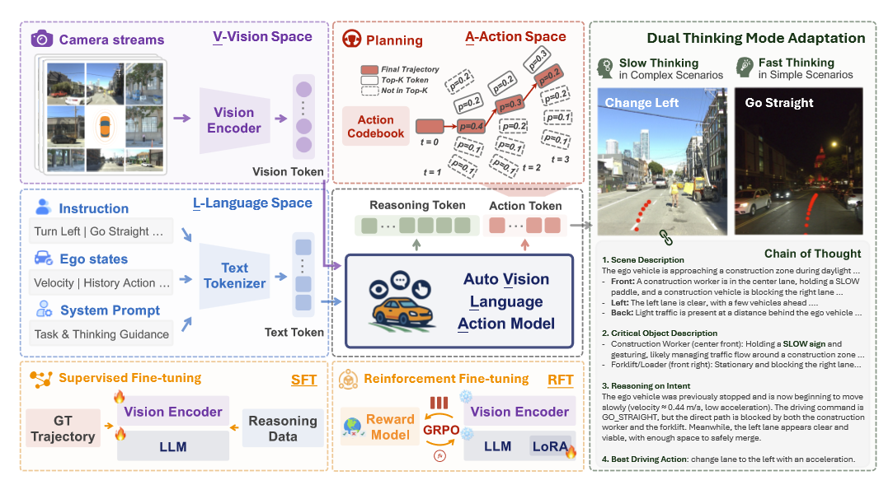
図1：AutoVLA は、世界知識を運転方策に統合する、視覚言語モデルに基づく End-to-End 自動運転フレームワークである。視覚観測、車両状態、言語指示を入力として受け取り、CoT 推論と物理的行動のトークン化を組み込んで計画軌道を直接生成する。モデルは推論と行動を同時に学習するために教師ありファインチューニングで学習され、さらに強化ファインチューニングを適用して高速・低速の思考モードによる適応的推論を可能にし、性能と効率を向上させる。
図中ラベル：Camera streams＝カメラストリーム、V-Vision Space＝V：視覚空間、Vision Encoder＝視覚エンコーダ、Vision Token＝視覚トークン、Planning＝計画、A-Action Space＝A：行動空間、Final Trajectory＝最終軌道、Top-K Token＝Top-K トークン、Not in Top-K＝Top-K 外、Action Codebook＝行動コードブック、L-Language Space＝L：言語空間、Instruction＝指示、Turn Left | Go Straight＝左折｜直進、Ego states＝自車状態、Velocity | History Action＝速度｜過去の行動、System Prompt＝システムプロンプト、Task & Thinking Guidance＝タスクと思考のガイダンス、Text Tokenizer＝テキストトークナイザ、Text Token＝テキストトークン、Reasoning Token＝推論トークン、Action Token＝行動トークン、Auto Vision Language Action Model＝AutoVLA モデル、Dual Thinking Mode Adaptation＝二重思考モードの適応、Slow Thinking in Complex Scenarios＝複雑なシナリオでの低速思考、Fast Thinking in Simple Scenarios＝単純なシナリオでの高速思考、Change Left＝左へ車線変更、Go Straight＝直進、Chain of Thought＝思考の連鎖（1. シーン記述：自車は日中に工事区間へ接近している…／前方：中央車線に工事作業員がいて SLOW パドルを持ち、工事車両が右車線を塞いでいる…／左：左車線は空いており、前方に数台の車両…／後方：自車の後方の離れた位置に軽い交通がある… 2. 重要物体の記述：工事作業員（前方中央）：SLOW 標識を持って身振りしており、工事区間周辺の交通を誘導している可能性が高い…／フォークリフト・ローダー（右前方）：静止して右車線を塞いでいる… 3. 意図に関する推論：自車は以前停止しており、現在ゆっくりと動き始めている（速度 ≈ 0.44 m/s、低い加速度）。運転コマンドは GO_STRAIGHT だが、直進経路は工事作業員とフォークリフトの両方に塞がれている。一方、左車線は空いていて利用可能に見え、安全に合流するのに十分な空間がある。 4. 最適な運転行動：加速しつつ左へ車線変更する）、Supervised Fine-tuning (SFT)＝教師ありファインチューニング、GT Trajectory＝正解軌道、Reasoning Data＝推論データ、Reinforcement Fine-tuning (RFT)＝強化ファインチューニング、Reward Model＝報酬モデル
近年の進歩にもかかわらず、既存の VLA モデルは自動運転において、図2に示すように 2 つの重大な限界に直面している。1）行動生成における物理的な実行不可能性または構造の複雑さ。一部のモデルは VLM を用いてテキストの行動やウェイポイントを直接生成する［35–37］が、これらの出力は物理的に実行不可能な場合があり、モード崩壊にも悩まされる。これに対処するため、近年の手法は中間的なメタ行動［38–40］や潜在行動トークン［41–43］を導入し、それらを下流のプランナやデコーダで処理して物理的に実行可能な軌道を生成する。しかし、中間表現は End-to-End 最適化のパラダイムを崩すか、モデルの複雑さと学習のオーバーヘッドを増大させる。2）多様なシナリオにわたる柔軟性と効率に欠ける推論。既存モデルの多く［44, 45］は固定された推論戦略を採用しており、単純なシナリオでの直接的な行動出力と複雑なシナリオでの思考の連鎖（CoT）推論とを適応的に切り替える能力を欠いている。DriveVLM［46］は二重プロセスのパラダイムを導入しているが、別々のモジュール（すなわち、低速推論のための VLM と高速応答のための従来型 End-to-End モデル）に依存しており、複雑なアーキテクチャ、学習オーバーヘッドの増大、限られたスケーラビリティをもたらしている［47］。
これらの限界を克服するため、我々は AutoVLA を提案する。これは、図1に示すように、物理的な行動トークンを事前学習済み VLM バックボーンに直接統合し、自己回帰的な計画方策の直接学習を可能にする End-to-End 自動運転フレームワークである。我々の統一的なアーキテクチャは推論と行動生成をシームレスに統合し、直接的な軌道生成と CoT 推論との適応的な切り替えを可能にする。教師ありファインチューニング（SFT）では、軌道のみのデータと CoT 推論データの両方を活用して、モデルに二重プロセス能力（高速思考と低速思考）を身につけさせる。さらに、検証可能な計画報酬関数を伴う Group Relative Policy Optimization（GRPO）［49］を用いた強化ファインチューニング（RFT）［48］を提案する。これにより、計画の精度と効率を両立させる適応的推論が可能になる。RFT 手法は計画性能を向上させるだけでなく、不必要な推論を最小化することで実行時の効率も向上させる。
我々は、nuPlan［50, 51］、Waymo［52］、nuScenes［53］を含む実世界データセット、および CARLA［54, 55］などのシミュレーションデータセットを用いて AutoVLA を広範に評価する。実験結果は、AutoVLA がオープンループとクローズドループの両方のテストにおいて、さまざまな End-to-End 自動運転ベンチマークで優れた性能を達成することを示している。実証結果は、我々の RFT 手法が計画性能を著しく向上させ、適応的な高速・低速思考能力を可能にし、冗長な推論を最小化することで実行時間を短縮することを裏付けている。本論文の主な貢献は次のようにまとめられる。
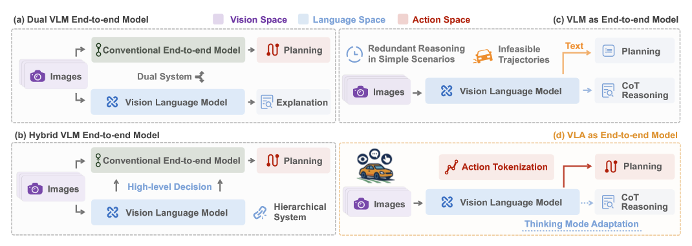
図2：End-to-End 自動運転のための VLM の 4 つのパラダイム。他の手法と比較して、提案する VLA ベースのパラダイムは、視覚入力からの直接的な軌道計画と適応的推論を可能にする。物理的行動のトークン化を言語モデルに組み込むことで、我々のモデルは高レベルのシーン推論と低レベルの軌道計画を効果的に統合する。
図中ラベル：(a) Dual VLM End-to-end Model＝(a) 二重 VLM 型 End-to-End モデル、(b) Hybrid VLM End-to-end Model＝(b) ハイブリッド VLM 型 End-to-End モデル、(c) VLM as End-to-end Model＝(c) End-to-End モデルとしての VLM、(d) VLA as End-to-end Model＝(d) End-to-End モデルとしての VLA、Vision Space＝視覚空間、Language Space＝言語空間、Action Space＝行動空間、Images＝画像、Conventional End-to-end Model＝従来型 End-to-End モデル、Planning＝計画、Dual System＝二重システム、Vision Language Model＝視覚言語モデル、Explanation＝説明、High-level Decision＝高レベル判断、Hierarchical System＝階層型システム、Redundant Reasoning in Simple Scenarios＝単純なシナリオでの冗長な推論、Infeasible Trajectories＝実行不可能な軌道、Text＝テキスト、CoT Reasoning＝CoT 推論、Action Tokenization＝行動トークン化、Thinking Mode Adaptation＝思考モードの適応
End-to-End 自動運転。End-to-End 自動運転の手法は近年大きな進歩を遂げている［10, 11, 56–64］。UniAD［65］や VAD［66］などの手法は、知覚から計画までの複数の運転タスクを統一的な Transformer アーキテクチャに明示的に統合し、計画性能を高めている。ParaDrive［67］は End-to-End 運転アーキテクチャにおいて必要な構成要素を論じている。さらに、GenAD［68］と DiffusionDrive［69］は生成モデルを採用して軌道の連続性を保ち、マルチモーダルな運転軌道を生成している。しかし、意味的推論のボトルネック［34］や複雑な環境での限られた適応性［70］のため、End-to-End 運転システムへの世界知識の統合は依然として困難である。
自動運転のための VLA と VLM。意味的推論と物理的行動の間のギャップは、End-to-End 自動運転における VLA と VLM にとって依然として重要な課題である。現在の研究は大きく 3 つの方向性に従っている。第 1 の方向性は、運転を言語中心の問題として直接定式化し、キャプション生成［71–73］や質問応答［74, 75］を通じたシナリオ理解に VLM を利用する。第 2 の方向性は、VLA または VLM を活用して高レベルのメタ行動や運転判断を生成し［17, 38–40］、それらを従来型のプランナや End-to-End モデルの教師信号［12, 76–78］またはガイド［39, 79］として用いる。これらの手法は統合を容易にするが、完全な End-to-End 最適化を妨げる。そこで第 3 の方向性は、VLM と行動生成を VLA モデルに直接統合し、潜在行動トークン［34–36, 43］または最終的な運転軌道［37, 44, 80–83］の直接予測を可能にする。しかし、これらの手法で用いられる単純な軌道デコーダ（例えば MLP［41, 84］や GRU［45］）は、非現実的な軌道を生成したり、モード崩壊に悩まされたりする可能性がある。この問題に対処するため、ORION［42］は生成型プランナを VLM アーキテクチャに組み込み、軌道の実行可能性を高めているが、モデルの複雑さと計算負荷を増大させている。本研究では、車両の運動のための物理的行動コードブックを事前学習済み VLM に統合し、意味的推論と物理的行動空間を効果的に橋渡しする。
強化ファインチューニング。RFT［48］は、DeepSeek-R1［22］で示されたように、LLM の性能と適応性を高めるうえで大きな可能性を示している。自動運転では、Gen-Drive［7］と TrajHF［85］が RFT を用いて、軌道生成モデルを安全制約や人間の運転の選好に整合させた。RAD［86］は 3D Gaussian Splatting を組み合わせてシナリオを生成し、クローズドループの RL 学習を行った。しかし、End-to-End の VLM／VLA ベースの自動運転への RFT の適用はまだ始まったばかりである。AlphaDrive［38］などの先行手法は、計画性能を高め、学習の効率と安定性を確保するために直接選好最適化（DPO）［87］ではなく GRPO を用いているが、依然として高レベルのメタ行動のみを含む単純化された設定に限られている。本研究では、シーン推論と低レベル計画の両方において End-to-End VLA フレームワークを最適化するために RFT を適用することでこの方向性を前進させ、収束を加速し学習の安定性を高めるために GRPO を採用する。
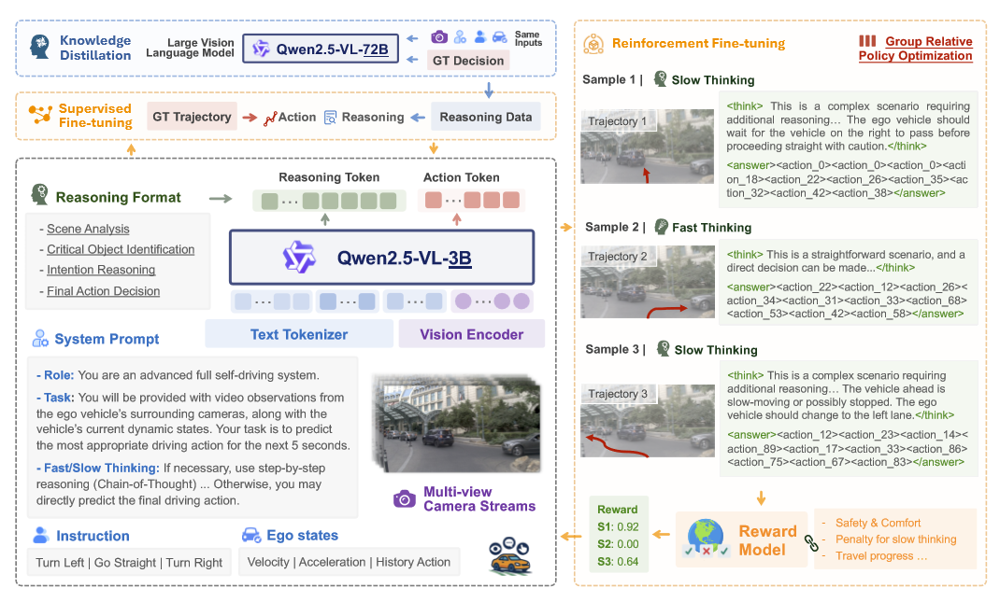
図3：AutoVLA モデルとその学習プロセスの概要。事前学習済みの小規模 VLM を AutoVLA のバックボーンとして用いる。モデルはマルチビューのカメラストリーム、システムプロンプト、運転指示、車両状態を入力として受け取り、テキストによる推論と物理的行動トークンを出力する。SFT では、強力な視覚理解能力を持つ大規模 VLM を用いて推論データを収集し、それを軌道データとともに SFT に用いて AutoVLA モデルを学習する。RFT では、GRPO を用いて検証済みの報酬関数との整合性を高めるようにモデルを学習しつつ、過剰な推論にペナルティを課すことで適応的推論を可能にする。
図中ラベル：Knowledge Distillation＝知識蒸留、Large Vision Language Model＝大規模視覚言語モデル、Same Inputs＝同一の入力、GT Decision＝正解の判断、Supervised Fine-tuning＝教師ありファインチューニング、GT Trajectory＝正解軌道、Action＝行動、Reasoning＝推論、Reasoning Data＝推論データ、Reasoning Format＝推論の形式（Scene Analysis＝シーン解析、Critical Object Identification＝重要物体の特定、Intention Reasoning＝意図の推論、Final Action Decision＝最終行動の決定）、Reasoning Token＝推論トークン、Action Token＝行動トークン、Text Tokenizer＝テキストトークナイザ、Vision Encoder＝視覚エンコーダ、System Prompt＝システムプロンプト（Role：あなたは高度な完全自動運転システムである。／Task：自車の周囲カメラからの映像観測と車両の現在の動的状態が与えられる。あなたのタスクは今後 5 秒間の最も適切な運転行動を予測することである。／Fast/Slow Thinking：必要であれば段階的推論（Chain-of-Thought）を用いる…そうでなければ最終的な運転行動を直接予測してよい。）、Multi-view Camera Streams＝マルチビューカメラストリーム、Instruction＝指示（Turn Left | Go Straight | Turn Right＝左折｜直進｜右折）、Ego states＝自車状態（Velocity | Acceleration | History Action＝速度｜加速度｜過去の行動）、Reinforcement Fine-tuning＝強化ファインチューニング、Group Relative Policy Optimization＝グループ相対方策最適化、Sample 1/2/3＝サンプル 1／2／3、Slow Thinking＝低速思考、Fast Thinking＝高速思考、Trajectory＝軌道、サンプル 1 の think：「これは追加の推論を要する複雑なシナリオである…自車は右側の車両が通過するのを待ってから、注意して直進すべきである。」、サンプル 2 の think：「これは単純なシナリオであり、直接判断できる…」、サンプル 3 の think：「これは追加の推論を要する複雑なシナリオである…前方の車両は低速か停止している可能性がある。自車は左車線へ車線変更すべきである。」、Reward＝報酬、Reward Model＝報酬モデル、Safety & Comfort＝安全性と快適性、Penalty for slow thinking＝低速思考へのペナルティ、Travel progress＝走行進捗
提案する AutoVLA フレームワークは、図1に示すように 2 つの主要な構成要素からなる。1）VLM バックボーン：統一的な自己回帰 Transformer デコーダを用いて、視覚とテキストの入力を処理し、対応するトークン（推論と行動）を生成することができる。2）物理的行動トークンの生成：言語モデルのデコーダを拡張し、車両の動きに直接対応する物理的行動トークンを出力させる。これらのトークンは物理的制約に従うように設計されており、物理的に実行可能な計画軌道へと確実に変換できる。
AutoVLA の学習は、図3に示すように 2 段階で行われる。1）教師ありファインチューニングでは、正解軌道データを用い、大規模 VLM から高品質な推論データを蒸留する。2）強化ファインチューニングでは、タスク固有の報酬関数を用いて計画性能を最適化しつつ、不必要な推論を最小化することで実行効率を向上させる。以下に、モデルと学習プロセスの詳細を示す。
モデル入力。AutoVLA は、車載カメラからのマルチビュー・マルチフレームのカメラデータ \(C\)、高レベルのナビゲーション指示 \(I\)、自車状態 \(S\) を入力として受け取り、シーン推論と軌道計画を行う。具体的には、車両の前方、左前方、右前方に配置された 3 台の RGB カメラを用いる。各カメラストリーム \(c^i = [c^i_{t-3}, c^i_{t-2}, c^i_{t-1}, c^i_t]\) は、現在フレームと直前の 3 フレームを含む 4 つの連続フレームを 2 Hz の頻度で取得し、シーンの動態に関する時間的情報を提供する。さらにモデルは、意図する方向を明示的に指定するために高レベルのナビゲーション指示 \(I\)（例えば Turn Left や Go Straight）を用いる。自車の状態 \(S\) は、現在の速度、加速度、過去の行動を含む。
ベース VLM モデル。AutoVLA の視覚言語バックボーンとして Qwen2.5-VL-3B［21］を採用する。Qwen2.5-VL は強力な視覚理解能力を持つ高性能なマルチモーダル大規模言語モデルのシリーズであり、Qwen2.5-VL モデルがオープンソースであることはタスク固有のファインチューニングを容易にする。3B 版は効率と性能の良好なトレードオフを提供し、車載デバイスへの展開に適している。
行動のトークン化。言語モデル内での軌道計画を可能にするため、連続的な車両軌道 \(\mathbf{P} \in \mathbb{R}^{\tau \times d}\) を物理的行動トークンの系列 \(\mathbf{a} = [a_1, \ldots, a_T]\) へと離散化する。ここで \(a_t \in \mathcal{A}\)、\(T\) はトークン化された予測軌道の長さであり、各トークンは短時間の空間位置と方位の変化 \((\Delta x, \Delta y, \Delta\theta)\) で表される。これにより計画タスクは、言語モデル内で実行可能な次トークン予測問題へと変換される。行動コードブック \(\mathcal{A} = \{a_1, a_2, \ldots, a_K\}\) は K-disk クラスタリング手法［88–90］を用いて構築し、車両の運動パターンの大部分をカバーする。最終的に、\(K = 2048\) 個の離散行動トークンからなる車両運動コードブックを得る。［30, 91］に倣い、これらの行動トークンを追加トークン（すなわち <action_0>、<action_1>、…）として VLM に組み込む。推論時には、モデルはこれらの行動トークンの系列を出力し、それを行動コードブックを用いて計画軌道へとデコードする。行動のトークン化と軌道のデコードの詳細は補足資料に示す。
推論と行動の統合。AutoVLA は推論と行動生成を単一の自己回帰 Transformer フレームワーク内に統合し、運転シナリオに応じて高速思考と低速思考を適応的に切り替えることを可能にする。高速思考モードでは、AutoVLA は長い CoT 推論を生成せずに物理的行動トークンを直接予測し、単純なシナリオでの迅速な応答を可能にする。これに対し低速思考モードでは構造化された CoT 推論を行い、モデルはまず環境を分析し、重要な要素を特定し、起こりうる結果について推論したうえで、最終的な運転行動を決定する。この二重思考能力を実現するため、AutoVLA は直接的な行動の教師データと推論で拡張されたデータの混合で学習される。両モードを一貫して支えるようにシステムプロンプトと応答形式を設計している。
推論データは、推論能力を持つ VLM を学習するために不可欠な高品質の CoT アノテーションを提供する［42］。運転タスクにおける推論は、動的な環境における複雑な意味と相互作用の理解を伴う［92–95］。その重要性にもかかわらず、高品質かつ大規模な運転推論データセットの構築は、3 つの主要な制約のために依然として重要な課題である。1）シナリオの多様性が限られ、例が反復的であること、2）交通標識や車両の方向指示器の信号といった重要な知覚的手がかりの表現が不十分であること、3）正当な理由なく一時停止標識で繰り返し停止するなど、推論プロセスの品質が低いこと、である。
これらの問題に対処するため、高性能な Qwen2.5-VL-72B モデル［21］を用いた自動推論アノテーションパイプラインを提案する。このパイプラインは高精度な推論アノテーションの自動生成を可能にし、大規模で高性能なモデルからよりコンパクトな対象モデルへの知識蒸留を支援する。パイプラインは、詳細なシーン記述、重要物体の特定、周囲のエージェントの意図の予測、適切な運転行動の決定という 4 つの主要な構成要素にわたって構造化された推論アノテーションを生成する。推論結果を制御するため、我々の手法は正解の運転行動をヒントとして組み込み、運転判断をシーンの文脈に明示的に結び付ける因果的な説明を生成するようモデルを導く。この構造化プロンプティング手法は無意味な出力を大幅に減らし、手作業による修正の必要性を最小化する。
このアノテーションパイプラインを用いて、nuPlan データセットに対する約 45.6k 件の CoT 推論アノテーションと、Waymo End-to-End 運転データセットに対する 7.2k 件のアノテーションからなる包括的な推論データセットを構築する。さらに、nuScenes と CARLA のシミュレーションデータに基づく VQA データセットである DriveLM［96］を再フォーマットして統合し、推論データを拡張する。追加の詳細と例示は補足資料に示す。
教師ありファインチューニング（SFT）は、推論と行動の両方の系列を生成するようモデルを学習するために用いられる。マルチフレームのカメラ画像 \(C\)、高レベルのナビゲーション指示 \(I\)、自車状態 \(S\) が与えられたとき、モデルは出力トークンの系列を生成するように学習される。出力系列は、推論のための言語トークン \(\mathbf{l} = [l_1, \ldots, l_L]\) と、それに続く行動トークン \(\mathbf{a} = [a_1, \ldots, a_T]\) からなる。SFT 中に高速思考と低速思考の両方を可能にするため、最終的な行動トークンのみを含むか、CoT 推論と対応する行動トークンを組み合わせた正解のアシスタント応答を持つ学習データを用意する。高速思考モードでは、\(\mathbf{l}\) は推論が不要であることを示す固定の短いテンプレートである。逆に低速思考モードでは、\(\mathbf{l}\) は CoT 推論の必要性を導入するテンプレートで始まり、その後に構造化された推論の系列が続く。
第 1 の教師信号は標準的な因果的言語モデリングの目的関数であり、目標トークン系列の負の対数尤度を最小化し、推論能力を促進する。もう一方の教師信号は計画精度に焦点を当てたものであり、出力系列の位置 \(x_{L+1}\) から \(x_{L+T}\) に現れる行動トークン \(\mathbf{a} = [a_1, \ldots, a_T]\) に対する補助損失を導入する。出力系列 \(\mathbf{x} = [l_1, \ldots, l_L, a_1, \ldots, a_T]\) が与えられたとき、損失関数は次のように定義される。
\[ \mathcal{L}_{\text{LM}} = -\frac{1}{N}\sum_{i=1}^{N}\log p_\theta(x_i \mid x_{\lt i}, C, I, S), \quad \mathcal{L}_{\text{action}} = -\frac{1}{T}\sum_{i=L+1}^{L+T}\log p_\theta(x_i \mid x_{\lt i}, C, I, S), \tag{1} \]
ここで \(N = L + T\) であり、\(p_\theta\) は \(\theta\) でパラメータ化されたモデルの予測分布を表す。
推論と行動生成を同時に最適化するため、言語モデリング損失と行動損失を単一の SFT 損失関数に統合する。推論データと行動のみのデータの不均衡に対処し、CoT 推論を含む例からモデルが学習するよう促すため、正解に CoT が含まれるかどうかに基づくサンプルごとの重み係数を適用する。各学習例の全体損失は次のように計算される。
\[ \mathcal{L}^{\text{SFT}}_i = w_i \cdot \left(\mathcal{L}_{\text{LM},i} + \lambda_{\text{a}}\mathcal{L}_{\text{action},i}\right), \quad w_i = \begin{cases} \lambda_{\text{cot}} & \text{if CoT is present in GT} \\ 1 & \text{otherwise} \end{cases}, \tag{2} \]
ここで \(\lambda_{\text{a}}\) と \(\lambda_{\text{cot}}\) は相対的な重要度を制御するハイパーパラメータである（訳注：式中の条件は「正解（GT）に CoT が含まれる場合」「それ以外」の意）。
AutoVLA の性能をさらに向上させ、運転の要件とタスク固有の報酬に整合させるため、強化学習ベースの事後学習手法を導入する。この RFT 段階により、モデルは適応的推論を行い、計画性能を最適化できるようになる。我々は GRPO アルゴリズム［49］を用いる。これは学習を安定させ、収束効率を向上させる。さらに、同一シナリオにおける複数の実行可能な軌道によって特徴づけられる計画の本質的なマルチモーダル性は、GRPO のグループベースの最適化フレームワークと自然に合致する［38］。
センサ画像、自車の状態、運転指示からなるシナリオ入力クエリ \(q\) が与えられたとき、旧方策 \(\pi_{\theta_{\text{old}}}\) から \(G\) 個の候補出力の集合 \(O = \{o_1, o_2, \ldots, o_G\}\) をサンプリングする。次に、正規化されたグループ相対アドバンテージ \(A_i\) を用いて、以下の目的関数を最大化することで現在の方策 \(\pi_\theta\) を最適化する。
\[ \mathcal{J}_{\text{GRPO}}(\theta) = \mathbb{E}_{q,\{o_i\}\sim\pi_{\theta_{\text{old}}}(O|q)}\left[\frac{1}{G}\sum_{i=1}^{G}\left(\mathcal{J}^R_i - \beta\mathbb{D}_{\text{KL}}(\pi_\theta \| \pi_{\text{ref}})\right)\right], \tag{3} \]
\[ \mathcal{J}^R_i = \min\left(\frac{\pi_\theta(o_i|q)}{\pi_{\theta_{\text{old}}}(o_i|q)}A_i,\ \text{clip}\left(\frac{\pi_\theta(o_i|q)}{\pi_{\theta_{\text{old}}}(o_i|q)}, 1-\epsilon, 1+\epsilon\right)A_i\right),\ A_i = \frac{r_i - \text{mean}(\{r_j\}_{j=1}^{G})}{\text{std}(\{r_j\}_{j=1}^{G})}, \tag{4} \]
ここで \(\theta\) と \(\theta_{old}\) は現在および旧方策のパラメータ、\(r_i\) はサンプル \(o_i\) に対する報酬、\(\epsilon\) と \(\beta\) はクリッピング範囲と KL ダイバージェンス正則化項の重みを制御するハイパーパラメータ、\(\pi_{\text{ref}}\) は SFT 段階の参照方策である。
最終的な報酬関数は \(r = r_{\text{Driving}} - \lambda_r r_{\text{CoT}}\) と定義される。ここで \(\lambda_r\) はバランスの重みを表す。項 \(r_{\text{Driving}}\) はベンチマークによって異なる。nuPlan データセットでは、安全性、快適性、走行効率、その他の運転品質の指標を捉える Predictive Driver Model Score（PDMS）［51］を運転報酬として用いる。Waymo End-to-End 運転データセットでは、Rater Feedback Score（RFS）アノテーション［52］の利用可能性が限られているため、平均変位誤差（ADE）を運転報酬として用いる。不必要に長い推論の連鎖を抑制するため、報酬関数に CoT 長ペナルティ \(r_{\text{CoT}}\) を組み込む。実装の追加の詳細は補足資料に示す。
| 手法 | PDMS ↑ | Collision ↑ | Area ↑ | Direction ↑ | Progress ↑ | TTC ↑ | Comfort ↑ |
|---|---|---|---|---|---|---|---|
| Ego Status MLP | 66.40 | 93.09 | 78.26 | 90.45 | 63.20 | 84.02 | 99.97 |
| TransFuser［58］ | 83.88 | 97.78 | 92.63 | 97.97 | 78.88 | 92.89 | 99.98 |
| DRAMA［56］ | 86.87 | 98.19 | 95.18 | 98.03 | 81.33 | 94.17 | 100.00 |
| Hydra-MDP［57］ | 91.26 | 99.07 | 98.29 | 95.79 | 85.20 | 96.56 | 100.00 |
| Centaur［59］ | 92.10 | 99.23 | 98.72 | 96.77 | 85.96 | 97.17 | 99.97 |
| TrajHF［85］ | 93.95 | 99.30 | 97.51 | 91.72 | 90.39 | 98.02 | 99.81 |
| AutoVLA (One-shot) | 80.54 | 96.89 | 92.42 | 94.43 | 75.82 | 88.06 | 99.94 |
| AutoVLA (Post-RFT) | 89.11 | 98.41 | 95.64 | 95.40 | 81.87 | 98.04 | 99.94 |
| AutoVLA (Best-of-N) | 92.12 | 99.14 | 97.08 | 95.51 | 87.55 | 97.12 | 99.98 |
表1：NAVSIM（nuPlan）End-to-End 運転ベンチマークにおけるテスト結果。
データセット。AutoVLA モデルは、実世界とシミュレーションの多様なデータセットを用いて学習する。nuPlan（Open-Scene）データセット［50, 97］は、8 系統のカメラデータと物体アノテーションを伴う 120 時間の大規模な運転データを含む。Waymo End-to-End 運転データセット（Waymo E2E）［52］は、8 系統のカメラ映像と自車軌道を伴う 20 秒間の運転セグメント 4,021 個からなり、工事区間の走行や危険な状況など、困難でロングテールのシナリオに特に焦点を当てている。nuScenes データセット［53］は、6 つのカメラ視点による 1,000 の市街地運転シーンを提供する。CARLA-Garage データセット［55］は、500,000 フレームを超えるシミュレーションのカメラデータを提供する。収集した推論データに加え、nuScenes と CARLA のデータセットについては、CoT 推論を促進するよう VQA ペアを再フォーマットして DriveLM データセット［96］を利用する。
ベンチマーク。AutoVLA を、実世界とシミュレーション環境にわたるオープンループとクローズドループの両方のベンチマークで評価する。オープンループ性能は、nuPlan データセットに基づく NAVSIM ベンチマーク［51］と nuScenes ベンチマーク［65］という 2 つの公開ベンチマークで評価する。NAVSIM ベンチマークは、衝突や自車の進捗など運転挙動の主要な側面を評価するために PDMS を用いる。nuScenes ベンチマークは評価指標として L2 距離と衝突率を用いる。さらに、人間が判定した計画品質を反映する RFS 指標を用いて、Waymo End-to-End 運転ベンチマークにおける我々のモデルの性能を報告する。クローズドループ性能は、CARLA シミュレータ上の Bench2Drive ベンチマーク［54］で評価する。Bench2Drive は、さまざまな場所と気象条件の下での 44 のインタラクティブなクローズドループシナリオを含み、成功率、運転スコア、効率、快適性などの指標を用いる。
実装の詳細。各行動トークンは 0.5 秒間の移動に対応し、計画ホライズンは 5 秒に設定する。したがってモデルは 10 個の行動トークンを出力し、そこから 5 秒間の軌道をデコードできる。SFT では学習率 \(1 \times 10^{-5}\) と FSDP 学習戦略を用いる。モデルは 8 基の NVIDIA L40S GPU を用いて 5 エポック学習する。GPU あたりのバッチサイズを 1 とし、4 ステップにわたって勾配を蓄積するため、実効バッチサイズは 32 となる。SFT 損失関数の重みパラメータは \(\lambda_a = 1\)、\(\lambda_{cot} = 40\) に設定する。RFT では、パラメータ効率の高い学習のために LoRA アダプタ［98］を用いる。RFT の学習率は \(3 \times 10^{-5}\)、KL 正則化の重み \(\beta\) は 0.04 に設定する。各ステップで方策の更新を 1 回だけ行うため、クリッピングや旧方策の追跡を必要としない簡略化された目的関数を使用できる。モデルは \(6,000\) ステップにわたってファインチューニングし、最も性能の良いチェックポイントを評価に用いる。追加の詳細は補足資料に示す。
本節では、さまざまなデータセットとベンチマークにおける AutoVLA モデルの主要な結果を報告し、追加の結果は補足資料に含める。
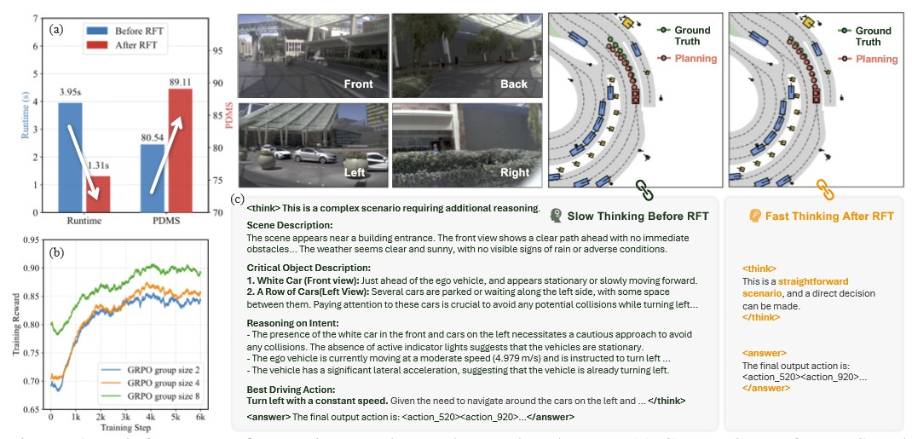
図5：nuPlan データセットにおける強化ファインチューニングの結果。(a) RFT 前後の PDMS と実行時間の比較。(b) 異なる GRPO グループサンプルサイズにおける学習報酬曲線。(c) RFT 前後の計画と推論の性能の定性的比較。
図中ラベル：(a) Before RFT＝RFT 前、After RFT＝RFT 後、Runtime (s)＝実行時間（秒）、(b) Training Reward＝学習報酬、Training Step＝学習ステップ、GRPO group size 2/4/8＝GRPO グループサイズ 2／4／8、(c) Front＝前方、Back＝後方、Left＝左、Right＝右、Ground Truth＝正解、Planning＝計画、Slow Thinking Before RFT＝RFT 前の低速思考、Fast Thinking After RFT＝RFT 後の高速思考。RFT 前の推論文：「これは追加の推論を要する複雑なシナリオである。シーン記述：シーンは建物の入口付近に見える。前方の視界には差し迫った障害物のない空いた経路が見える…天候は晴れており、雨や悪条件の兆候は見られない。重要物体の記述：1. 白い車（前方視点）：自車のすぐ前方にあり、静止しているかゆっくり前進しているように見える。2. 車の列（左視点）：数台の車が左側に駐車または待機しており、それらの間にいくらかの空間がある。左折時に衝突を避けるにはこれらの車に注意を払うことが重要である… 意図に関する推論：前方の白い車と左側の車の存在により、衝突を避けるための慎重な対応が必要である。作動中の方向指示灯がないことから、車両は静止していることが示唆される。自車は現在中程度の速度（4.979 m/s）で走行しており、左折を指示されている…車両には大きな横方向加速度があり、左折中であることを示唆している。最適な運転行動：一定速度で左折する。左側の車の周囲を進む必要があることから…」、最終出力行動：<action_520><action_920>…。RFT 後の推論文：「これは単純なシナリオであり、直接判断できる。」
データスケーリングの結果。nuPlan と nuScenes のデータセットを混合し、学習セットのサイズ（10k、50k、100k、および全 185k サンプル）を変えて、行動のみの教師あり学習、または CoT 推論の教師を追加した学習で AutoVLA を学習する。モデルはそれぞれの標準テストセットで評価し、結果を図4に示す。学習データ量を増やすと、両データセットで計画性能が一貫して向上することが観察される。nuPlan データセットでは、学習サンプルが 50k 未満の場合、PDMS と衝突スコアの点で CoT 推論は行動のみの学習を上回らない。これは、限られたデータから構造化された推論を学習することの難しさが増すためと考えられる。しかし、学習セットのサイズが大きくなるにつれて、CoT 推論で学習したモデルは行動のみの教師で学習したモデルを上回り、推論で拡張した学習のスケーラビリティ上の利点が浮き彫りになる。nuScenes データセットでも同様の傾向が観察される。学習セットのサイズが大きくなるにつれ、CoT 推論で学習したモデルは、L2 距離と衝突率の点で行動のみのデータで学習したモデルを一貫して上回る。
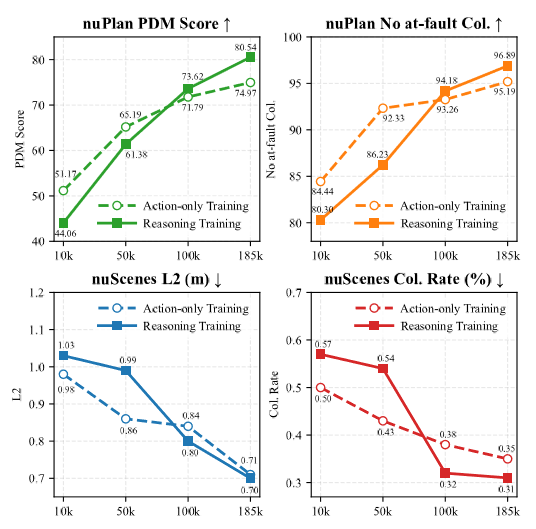
図4：nuPlan と nuScenes のデータセットにおける計画性能へのデータスケーリングの効果（x 軸は対数スケール）。学習データ量を増やすと計画性能が一貫して向上する。
図中ラベル：nuPlan PDM Score＝nuPlan PDM スコア、nuPlan No at-fault Col.＝nuPlan 過失なし衝突スコア、nuScenes L2 (m)＝nuScenes L2（m）、nuScenes Col. Rate (%)＝nuScenes 衝突率（%）、Action-only Training＝行動のみの学習、Reasoning Training＝推論ありの学習
| 思考モード | 最小（s） | 最大（s） | 平均（s） |
|---|---|---|---|
| Fast Thinking（高速思考） | 0.997 | 1.116 | 1.072 |
| Slow Thinking（低速思考） | 7.607 | 13.706 | 10.518 |
表2：AutoVLA における高速・低速思考モードの実行時間の分析。
RFT の性能。表2に示すように、低速思考モードは CoT 推論を生成するため、高速思考モードと比べて実行時間が大幅に長くなる。このオーバーヘッドを軽減するため、AutoVLA の適応的思考能力を高め、単純なシナリオでの不必要な推論を避けるために RFT を導入する。具体的には、SFT で学習した全データの CoT 推論モデルに RFT を適用し、その計画性能を高める。図5(a) に示すように、RFT により PDMS が 10.6% 向上し（NAVSIM テストセット）、実行時間が 66.8% 削減される（500 のテストシナリオの平均）。図5(b) の報酬曲線は、RFT 中のモデルの方策が段階的に改善していく様子を示している。異なる GRPO グループサンプルサイズでの実験は、より大きなグループが学習サンプルのより広範な探索を促すことで、より良い性能をもたらすことを示している。図5(c) に示すように、RFT は単純なシナリオにおける不必要で遅い推論も削減する。これは、単純な運転ケースで高速思考を促す CoT 長ペナルティによるものである。定性的な比較では、SFT モデルは生成時の誤差の蓄積により準最適な計画を生成するのに対し、RFT モデル（PDMS ベースの報酬で最適化）はより良い軌道を生成することが示されている。
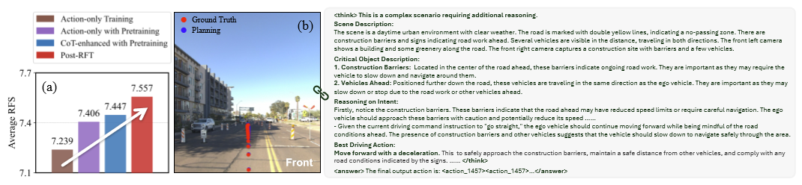
図6：Waymo End-to-End 運転データセットにおける、異なる学習設定での AutoVLA の性能比較と、モデルの推論能力を示す例。
図中ラベル：(a) Action-only Training＝行動のみの学習、Action-only with Pretraining＝事前学習ありの行動のみ、CoT-enhanced with Pretraining＝事前学習ありの CoT 強化、Post-RFT＝RFT 後、Average RFS＝平均 RFS、(b) Ground Truth＝正解、Planning＝計画、Front＝前方。推論文：「これは追加の推論を要する複雑なシナリオである。シーン記述：シーンは晴天の日中の市街地環境である。道路には二重の黄線が引かれており、追い越し禁止区域を示している。前方には道路工事を示す工事用バリアと標識がある。遠方には双方向に走行する数台の車両が見える。左前方カメラには建物と若干の緑地が道路沿いに映っている。右前方カメラにはバリアと数台の車両を伴う工事現場が映っている。重要物体の記述：1. 工事用バリア：前方の道路の中央に位置し、進行中の道路工事を示している。車両が減速して迂回する必要がある可能性があるため重要である。2. 前方の車両：道路のさらに先に位置し、自車と同じ方向に走行している。道路工事やその他の車両のために減速または停止する可能性があるため重要である。意図に関する推論：まず、工事用バリアに注意する。これらのバリアは、前方の道路で制限速度が引き下げられているか、慎重な走行が必要である可能性を示している。自車は注意してバリアに接近し、場合によっては速度を落とすべきである… 現在の運転コマンドが『直進』であることから、自車は前方の道路状況に注意しながら前進を続けるべきである。工事用バリアと他の車両の存在は、この区域を安全に通過するために車両が減速すべきことを示唆している。最適な運転行動：減速しながら前進する。これは、工事用バリアに安全に接近し、他の車両との安全な距離を保ち、標識が示す道路状況に従うためである…」、最終出力行動：<action_1457><action_1457>…
nuPlan ベンチマークの結果。NAVSIM ベンチマーク［51］において AutoVLA を最先端の End-to-End 運転モデルと比較評価し、結果を表1に示す。Best-of-N 計画では、オラクルのスコアラを用いて 6 つの生成候補から最適な軌道を選択する。RFT 後、AutoVLA は NAVSIM の報酬信号により密接に整合し、性能が大幅に向上する。Best-of-N 戦略は性能をさらに高め、最高の PDMS を達成する。全体として、AutoVLA は多様なデータセットにわたるスケーラビリティを示しつつ、競争力のある結果を達成している。
（訳注：表1では TrajHF の PDMS 93.95 が最高値として太字になっており、AutoVLA (Best-of-N) の 92.12 は表中の最高値ではない。「最高の PDMS」は AutoVLA の各設定の中での最高値と解される。）
Waymo E2E の性能。ロングテールで複雑な運転シナリオを特徴とする Waymo End-to-End 運転データセット［52］で AutoVLA を評価する。テストセットにおけるさまざまな学習設定でのモデルの性能を図6に示す。結果から、nuPlan と nuScenes のデータセットを組み合わせた事前学習によって性能が大幅に向上することが明らかになり、より多様な学習データに触れることでシーン理解が強化されることが示唆される。学習に CoT 推論を組み込むと、行動のみの学習と比べて計画性能がさらに向上する。ADE を報酬関数として用いた RFT による事後学習は、全体として最良の RFS 指標を達成する。工事区間における定性的な例は、遮蔽について推論し、効果的な迂回計画を生成するモデルの能力を示している。
CARLA クローズドループ性能。CARLA シミュレータ上の Bench2Drive ベンチマーク［54］で、AutoVLA モデルのクローズドループ運転性能を評価する。モデルは軌道のみのデータと CoT データの両方を用いて SFT で学習する。テスト時の計画頻度は 2 Hz に設定する。表3に示す結果は、クローズドループテストにおいて、AutoVLA が総合的な運転スコアと成功率の点で既存の End-to-End 運転モデルを上回ることを示している。
| 手法 | Driving Score ↑ | Success Rate (%) ↑ | Efficiency ↑ | Comfortness ↑ |
|---|---|---|---|---|
| AD-MLP［99］ | 18.05 | 0.00 | 48.45 | 22.63 |
| UniAD-Base［65］ | 45.81 | 16.36 | 129.21 | 43.58 |
| VAD［66］ | 42.35 | 15.00 | 157.94 | 46.01 |
| TCP-traj［100］ | 59.90 | 30.00 | 76.54 | 18.08 |
| DriveAdapter［101］ | 64.22 | 33.08 | 70.22 | 16.01 |
| Orion［42］ | 77.74 | 54.62 | 151.48 | 17.38 |
| AutoVLA | 78.84 | 57.73 | 146.93 | 39.33 |
表3：Bench2Drive（CARLA）クローズドループ運転ベンチマークにおけるテスト結果（列見出し：Driving Score＝運転スコア、Success Rate＝成功率、Efficiency＝効率、Comfortness＝快適性）。
テキストのウェイポイント出力。nuPlan と nuScenes のデータセットから成る同じ混合学習セットを用いて、テキスト形式でウェイポイントを予測し、それをウェイポイントの軌道へと変換するモデルを学習する。標準テストセットを用いたオープンループの計画設定でその性能を評価する。表5に示す結果は、我々の行動トークン化と生成の手法が、テキストベースのウェイポイント予測手法を大幅に上回ることを示している。さらに、数値をデコードする必要があるため、テキストベースの手法は最終的な軌道の生成に大幅に高い計算コストを要する。これは、精密な数値推論を扱ううえでの言語モデルの限界を示している。
| コードブックサイズ | RT-1 (Action Bin)［102］ | FAST (DCT)［91］ | K-disk（提案手法） | |||||
|---|---|---|---|---|---|---|---|---|
| ADE(m) ↓ | FDE(m) ↓ | ADE(m) ↓ | FDE(m) ↓ | ADE(m) ↓ | FDE(m) ↓ | MC ↑ | CU ↑ | |
| 256 | 0.1440 | 0.2942 | 0.1708 | 0.2137 | 0.0687 | 0.1034 | 86.47% | 100.0% |
| 1024 | 0.1052 | 0.1883 | 0.0522 | 0.0588 | 0.0253 | 0.0282 | 97.41% | 100.0% |
| 2048 | 0.1014 | 0.1775 | 0.0281 | 0.0309 | 0.0182〜 | 0.0203〜 | 99.42% | 100.0% |
| 4096 | 0.1001 | 0.1739 | 0.0149 | 0.0161 | 0.0141 | 0.0155 | 100.0% | 91.46% |
表4：異なるコードブックサイズと手法における行動トークン化の精度。（DCT：離散コサイン変換、MC：運動カバレッジ、CU：コードブック使用率。太字は最良、下線は 2 番目、波線は 3 番目の性能を示す。）（訳注：原表で波線付きの値は本訳では末尾に「〜」を付して示した。）
| 指標 | Text Waypoint（テキストのウェイポイント） | Physical Action（物理的行動） |
|---|---|---|
| PDM Score ↑ | 71.31 | 80.54 |
| Avg. L2 (m) ↓ | 0.89 | 0.70 |
| Avg. Col. (%) ↓ | 0.36 | 0.31 |
| Runtime (s) ↓ | 7.65 | 3.95 |
表5：物理的行動トークン化の影響（指標：PDM スコア、平均 L2、平均衝突率、実行時間）。
| トークン化 | PDMS ↑ | Collision ↑ | Progress ↑ |
|---|---|---|---|
| FAST (DCT)［91］ | 67.63 | 92.74 | 64.09 |
| K-disk（提案手法） | 80.54 | 96.89 | 75.82 |
表6：NAVSIM における異なるトークン化手法間の性能比較。
行動のトークン化手法。表4に示すように、RT-1［102］、FAST［91］、および提案する K-disk トークン化を含むいくつかのトークン化手法について、異なるコードブックサイズにわたる再構成精度を評価する。RT-1 では、加速度と操舵角速度を一様な行動ビンで離散化し、運動学モデルを用いて軌道を再構成する。しかし、軌道レベルのデータしか利用できず制御行動を間接的に推定しなければならないため、このビニング手法は最も大きな再構成誤差をもたらす。FAST トークン化手法は我々の K-disk 手法よりもコードブックサイズに敏感であり、\(K = 4096\) でのみ同等の再構成精度を達成する。これに対し、提案手法はすべてのコードブックサイズにわたって一貫して最高の再構成精度を達成する。
コードブックサイズが小さい場合（\(K = 256\)）、多くの動きが少数のコードブックトークンでは適切に表現できないため、運動カバレッジが限られ、再構成誤差が著しく大きくなる。コードブックサイズが \(K = 2048\) を超えて大きくなると、トークン化精度と運動カバレッジの改善はわずかになる一方、多くのトークンが冗長かつ未使用のままとなるためコードブック使用率は低下する。このトレードオフを考慮し、再構成精度、運動カバレッジ、効率的なコードブック使用のバランスをとるために \(K = 2048\) を選択する。
さらに、表6は異なるトークン化手法について NAVSIM（nuPlan）における計画性能を報告している。提案手法は FAST を上回る。FAST では、離散コサイン変換が固定ホライズンの計画軌道を可変長のトークン系列に変換するため、適切なトークン長の選択が複雑になり、固定ホライズンの計画が困難になる。
我々は、シーン推論と行動生成を単一の自己回帰モデル内で統合する End-to-End 自動運転フレームワーク AutoVLA を提案した。SFT を採用して、モデルが高速思考（直接的な軌道生成）と低速思考（長い CoT 推論で強化）の両モードで動作できるようにした。加えて、不必要な推論にペナルティを課し、行動生成を報酬関数に整合させることで適応的推論を可能にする RFT を導入し、性能と効率の両方を向上させた。実験結果は、AutoVLA がオープンループとクローズドループの両方の計画ベンチマークで競争力のある性能を達成し、強力な推論能力を示すことを実証している。
限界と今後の課題。二重プロセス適応を備えた我々のモデルはほぼリアルタイムの推論（1 Hz）を達成しているが、依然として GPU への依存度が高く、多大なメモリと計算を必要とする。今後の研究では、リアルタイムでの展開を可能にするため、リアルタイム応用、実行時効率の最適化、および計算オーバーヘッドの削減（例えばモデルの量子化による）に焦点を当てる。
本研究は、Federal Highway Administration Center of Excellence on New Mobility and Automated Vehicles、ならびに National Science Foundation の Award No. 2346267「POSE: Phase II - DriveX: An Open Source Ecosystem for Automated Driving and Intelligent Transportation Research」の支援を受けた。
参考文献は原文のまま掲載した。
言語モデル内での軌道レベルの計画を可能にするため、それぞれが短時間の実行可能な車両の操作を表す物理的行動トークンを導入する。これらのトークンは、大規模な実世界の車両軌道を含む Waymo Open Motion Dataset（WOMD）［103］における車両の運動パターンをクラスタリングすることで導出される。得られたコードブックは図S1(a) に可視化されており、nuPlan、nuScenes、Waymo を含む複数の実世界データセットを用いる実験全体で使用される。シミュレーションテストでは実世界データと比べて車両の動力学が異なるため、CARLA-Garage データセット［55］に対して同じクラスタリング手順を用いて別の行動コードブックを構築する。これにより、図S1(b) に示すように、シミュレーションテスト用のもう 1 組の 2048 個の行動トークンが得られる。
まず、離散行動コードブックを構築するために、データセットから短い運動セグメントをサンプリングする。各セグメントは 0.5 秒間の車両の運動を表し、現在フレームの座標系における車両の位置、寸法、方位に基づいて計算された最終フレームのバウンディングボックスの輪郭によって特徴づけられる。次に、サンプリングしたセグメントに K-Disk クラスタリングを適用する。これは、平均輪郭距離で測ったときにどの 2 つのセグメントも距離しきい値 \(\delta = 0.05\) m 以内にならないように、多様な代表セグメントの集合 \(\{m_1, \ldots, m_K\}\) を反復的に選択するものである。選択された各セグメント \(m_k\) について、その空間的な変位と方位の変化 \((\Delta x, \Delta y, \Delta\theta)\) を抽出し、それを行動トークン \(a_k\) と定義する。得られる行動コードブックは \(K = 2048\) の \(\mathcal{A} = \{a_1, \ldots, a_K\}\) であり、各トークンは互いに異なる物理的に実行可能な短時間の車両挙動を符号化している。
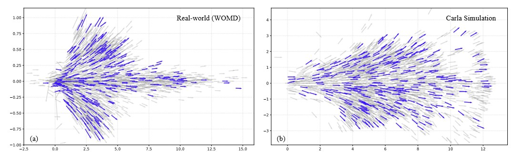
図S1：(a) 実世界データセット（WOMD）と (b) シミュレーションデータセット（CARLA）から得た行動コードブックの可視化。灰色の矢印は 2048 個すべてのトークン（位置と方位）を表し、見やすさのために 300 個のトークンをランダムに青で強調表示している。
図中ラベル：Real-world (WOMD)＝実世界（WOMD）、Carla Simulation＝CARLA シミュレーション
構築した行動コードブックに基づいて行動トークナイザを実装する。学習時には、各 0.5 秒のセグメントをコードブック \(\mathcal{A}\) 内の最も近い行動トークンに対応付けることで連続的な軌道を離散化し、離散トークンの系列 \([a_1, a_2, \ldots, a_T]\) を得る。推論時には、言語モデルが行動トークンの系列を自己回帰的に生成し、各トークンは 0.5 秒の運動セグメントを表す。これらのトークンはコードブック内の対応する運動セグメントに変換し戻され、自車の初期姿勢から順に適用される。したがってモデルは、これらの局所的な変位と回転を合成することにより、自車中心の座標系で連続的な軌道を再構成する。
思考の連鎖（CoT）アノテーションを伴う大規模で高品質な推論データセットは、Vision-Language-Action（VLA）モデルにおいて頑健な推論能力を実現するために不可欠である。本論文では、図S2に示すように、最先端の視覚言語モデル Qwen2.5-VL-72B［21］を用いた自動推論アノテーションパイプラインを導入する。このパイプラインは人手のアノテーションへの依存を大幅に減らし、より強力な大規模モデルから、より効率的でコンパクトなモデルへの効果的な知識蒸留を促進する。
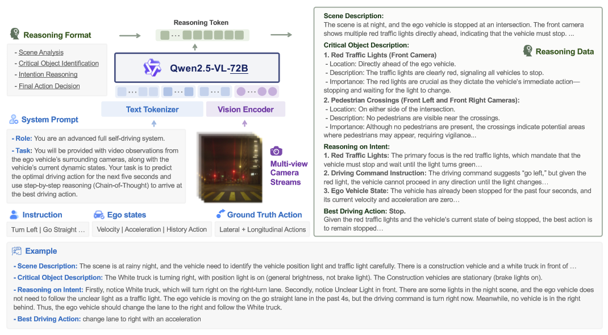
図S2：自動運転のための自動推論アノテーションパイプライン。Waymo End-to-End 運転データセットからの推論アノテーション例とともに示す。
図中ラベル：Reasoning Format＝推論の形式（Scene Analysis＝シーン解析、Critical Object Identification＝重要物体の特定、Intention Reasoning＝意図の推論、Final Action Decision＝最終行動の決定）、Reasoning Token＝推論トークン、Text Tokenizer＝テキストトークナイザ、Vision Encoder＝視覚エンコーダ、System Prompt＝システムプロンプト（Role：あなたは高度な完全自動運転システムである。／Task：自車の周囲カメラからの映像観測と車両の現在の動的状態が与えられる。あなたのタスクは、段階的推論（Chain-of-Thought）を用いて最適な運転行動に到達し、今後 5 秒間の最適な運転行動を予測することである。）、Multi-view Camera Streams＝マルチビューカメラストリーム、Instruction＝指示（Turn Left | Go Straight＝左折｜直進）、Ego states＝自車状態（Velocity | Acceleration | History Action＝速度｜加速度｜過去の行動）、Ground Truth Action＝正解行動（Lateral + Longitudinal Actions＝横方向＋縦方向の行動）、Reasoning Data＝推論データ。推論データ例：シーン記述：夜間であり、自車は交差点で停止している。前方カメラには真正面に複数の赤信号が映っており、車両が停止しなければならないことを示している…／重要物体の記述：1. 赤信号（前方カメラ）－位置：自車の真正面。説明：信号は明らかに赤で、全車両に停止を指示している。重要性：赤信号は車両の直近の行動、すなわち停止して信号が変わるのを待つことを決定づけるため極めて重要である。2. 横断歩道（左前方・右前方カメラ）－位置：交差点の両側。説明：横断歩道付近に歩行者は見えない。重要性：歩行者はいないが、横断歩道は歩行者が現れうる領域を示しており、警戒が必要である…／意図に関する推論：1. 赤信号：主な焦点は赤信号であり、信号が青に変わるまで車両は停止して待たなければならない… 2. 運転コマンド指示：運転コマンドは「左へ進む」ことを示唆しているが、赤信号のため、信号が変わるまで車両はどの方向にも進めない… 3. 自車状態：車両はすでに過去 4 秒間停止しており、現在の速度と加速度はゼロである…／最適な運転行動：停止。赤信号と車両が現在停止している状態を考慮すると、最適な行動は停止を続けることである…。Example＝例（シーン記述：雨の夜であり、車両は車両の車幅灯と信号を注意深く見分ける必要がある。前方に工事車両と白いトラックがいる…／重要物体の記述：白いトラックは右折中で、車幅灯が点灯している（一般的な明るさであり、ブレーキランプではない）。工事車両は停止している（ブレーキランプ点灯）。／意図に関する推論：まず、右折車線で右折しようとしている白いトラックに注意する。次に、前方の不明瞭な灯火に注意する。夜間のシーンにはいくつかの灯火があり、自車は不明瞭な灯火を信号として従う必要はない。自車は過去 4 秒間直進車線を走行しているが、現在の運転コマンドは右折である。一方、右後方に車両はいない。したがって、自車は右へ車線変更し、白いトラックに追従すべきである。／最適な運転行動：加速しつつ右へ車線変更する）
システムプロンプト。システムプロンプトは、モデルの役割、タスク、期待される CoT 推論の形式、および CoT 推論の例を指定する。役割と CoT 推論形式の定義は、構造化された CoT 推論に焦点を当てた AutoVLA モデルの必要な出力と整合している。モデルを導くために、いくつかの代表的な推論例を慎重に設計する。さらに、推論プロセスは 4 つの主要なステップ、すなわち 1）シーンの記述と分析、2）重要物体の特定と記述、3）周囲の物体の意図の推論、4）意思決定とメタ行動、を含む。
ユーザメッセージ。ユーザメッセージは、運転指示、自車状態、マルチビューのカメラストリームを含む。特に、データから導出した正解の運転メタ行動を推論における明示的なヒントとして導入し、判断を運転の文脈に直接結び付ける因果的な説明を生成するようモデルを導く。この構造化プロンプティングは無意味な出力を大幅に減らし、手作業による修正を最小化する。
推論データの生成。強力な推論能力と広範な世界知識を活用するため、Qwen-VL シリーズで最も高性能なモデルを推論データのアノテーションエンジンとして用いる。新たに生成される推論テキストトークンの最大長は 700 に設定する。加えて、nuScenes と CARLA のデータセットにおける知覚、予測、計画に焦点を当てた DriveLM VQA データセット［96］から関連する質問への回答を抽出し、我々の標準化された推論形式に再フォーマットする。これらの再フォーマットされたサンプルを生成データと組み合わせて、最終的な推論データセットを構築する。
人手による品質チェック。生成された推論の品質を、重要物体の特定、因果的推論、行動判断の正確さと完全性に基づいて評価する。評価には二値の採点方式を用いる。これらの側面のいずれかに誤りがあればスコアは 0 となり、そうでなければサンプルはスコア 1 を得る。人間のアノテータがランダムに選択した 3,000 サンプルを評価し、全体で 88.8% の正確さが得られた。これは提案するアノテーションパイプラインの高い信頼性を示している。誤りのあるサンプルは修正または破棄した。
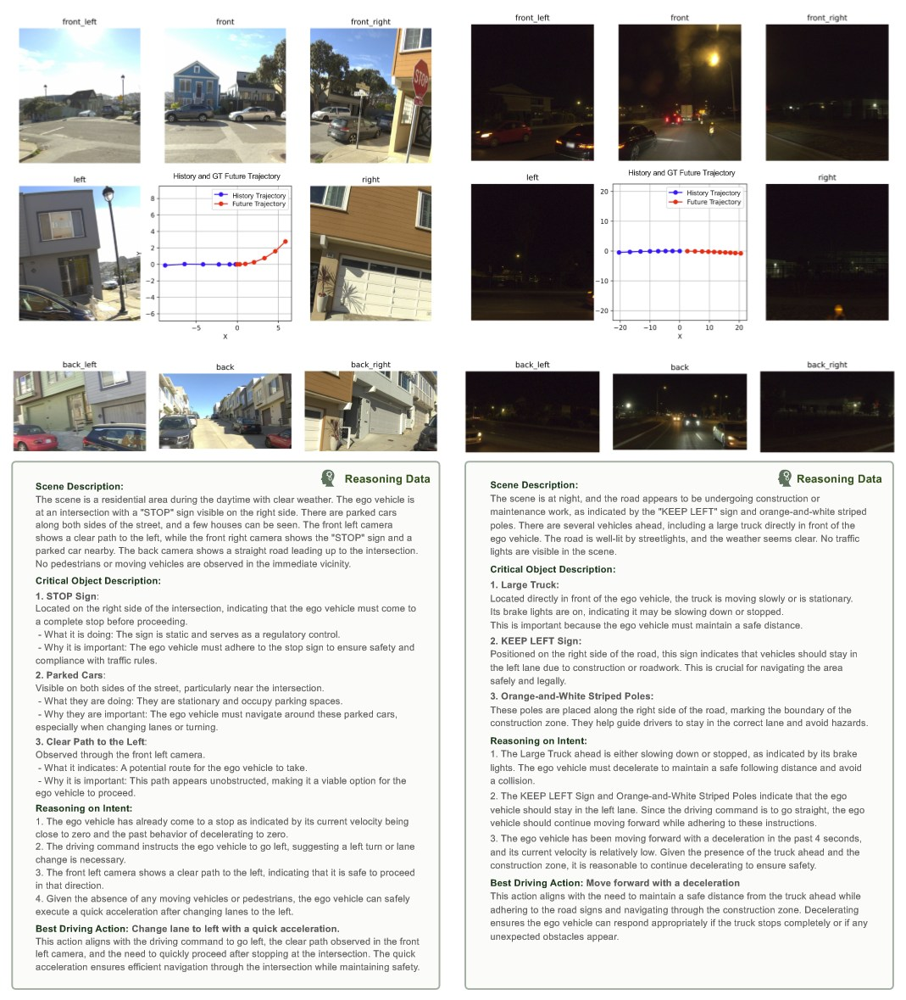
図S3：Waymo End-to-End 運転データセットにおける推論データアノテーションの可視化。
図中ラベル：front_left / front / front_right / left / right / back_left / back / back_right＝左前方／前方／右前方／左／右／左後方／後方／右後方（カメラ）、History and GT Future Trajectory＝過去軌道と正解の将来軌道、History Trajectory＝過去軌道、Future Trajectory＝将来軌道、Reasoning Data＝推論データ。
左の例：シーン記述：晴天の日中の住宅地である。自車は交差点にいて、右側に「STOP」標識が見える。通りの両側に駐車車両があり、数軒の家が見える。左前方カメラには左方向への空いた経路が映り、右前方カメラには「STOP」標識と近くの駐車車両が映っている。後方カメラには交差点へと続くまっすぐな道路が映っている。すぐ近くに歩行者や走行中の車両は見られない。重要物体の記述：1. STOP 標識：交差点の右側に位置し、自車が進む前に完全に停止しなければならないことを示す。－何をしているか：標識は静的であり、規制のための制御として機能する。－なぜ重要か：安全と交通規則の遵守を確保するため、自車は一時停止標識に従わなければならない。2. 駐車車両：通りの両側、特に交差点付近に見える。－何をしているか：静止しており駐車スペースを占めている。－なぜ重要か：特に車線変更や旋回時に、自車はこれらの駐車車両を避けて進まなければならない。3. 左方向の空いた経路：左前方カメラで観測される。－何を示すか：自車が取りうる経路。－なぜ重要か：この経路は遮るものがないように見え、自車が進むための実行可能な選択肢となる。意図に関する推論：1. 現在の速度がほぼゼロであることと、ゼロまで減速してきた過去の挙動から示されるように、自車はすでに停止している。2. 運転コマンドは自車に左へ進むよう指示しており、左折または車線変更が必要であることを示唆している。3. 左前方カメラには左方向の空いた経路が映っており、その方向へ進むのが安全であることを示している。4. 走行中の車両や歩行者がいないことから、自車は左へ車線変更した後に安全に素早く加速できる。最適な運転行動：素早く加速しつつ左へ車線変更する。この行動は、左へ進むという運転コマンド、左前方カメラで観測された空いた経路、交差点で停止した後に速やかに進む必要性と整合している。素早い加速により、安全を保ちつつ交差点を効率的に通過できる。
右の例：シーン記述：夜間であり、「KEEP LEFT」標識とオレンジと白の縞模様のポールが示すように、道路は工事中または保守作業中であるように見える。前方には数台の車両があり、自車の真正面には大型トラックがいる。道路は街灯で十分に照らされており、天候は晴れているようである。シーン内に信号は見えない。重要物体の記述：1. 大型トラック：自車の真正面に位置し、ゆっくり動いているか静止している。ブレーキランプが点灯しており、減速中または停止中である可能性を示す。自車は安全な距離を保たなければならないため重要である。2. KEEP LEFT 標識：道路の右側に設置され、工事や道路作業のため車両は左車線にとどまるべきことを示す。この区域を安全かつ合法的に通過するために極めて重要である。3. オレンジと白の縞模様のポール：道路の右側に沿って設置され、工事区域の境界を示している。運転者が正しい車線にとどまり危険を避けるのを助ける。意図に関する推論：1. ブレーキランプが示すように、前方の大型トラックは減速中か停止中である。自車は安全な車間距離を保ち衝突を避けるために減速しなければならない。2. KEEP LEFT 標識とオレンジと白の縞模様のポールは、自車が左車線にとどまるべきことを示している。運転コマンドは直進であるため、自車はこれらの指示に従いつつ前進を続けるべきである。3. 自車は過去 4 秒間減速しながら前進しており、現在の速度は比較的低い。前方のトラックと工事区域の存在を考えると、安全を確保するために減速を続けるのが妥当である。最適な運転行動：減速しながら前進する。この行動は、道路標識に従い工事区域を通過しながら、前方のトラックとの安全な距離を保つ必要性と整合している。減速することで、トラックが完全に停止したり予期せぬ障害物が現れたりした場合にも自車が適切に対応できる。
Waymo End-to-End 運転データセットからの CoT 推論アノテーションの例を図S3に示す。これらは、我々のアノテーションパイプラインが、一時停止標識ですでに停止した車両が無期限に停止し続けるのではなく発進できる状況に対処できることを示している。パイプラインは工事に関連する道路規制のシナリオも正確に解釈し、高品質な推論アノテーションを可能にしている。nuPlan データセットでの例を図S4に示す。これらは、検出したすべての一時停止標識で停止するのではなく、異なる車線にわたって一時停止標識や信号の機能的な関連性を区別するパイプラインの能力を示している。
効率的なマルチ GPU 学習のため、Fully Sharded Data Parallel（FSDP）戦略を用いて教師ありファインチューニング（SFT）を行う。メモリ使用量を削減し計算を高速化するため、パラメータ、勾配、バッファに BFloat16 を用いた混合精度学習を有効にする。GPU メモリ消費を減らすために勾配チェックポイントを有効にする。学習率のウォームアップは 500 ステップであり、2,000 ステップごとに 2% 減衰させる。モデルは 5 エポック学習し、学習の安定性を確保するため最大値 1.0 で勾配クリッピングを適用する。
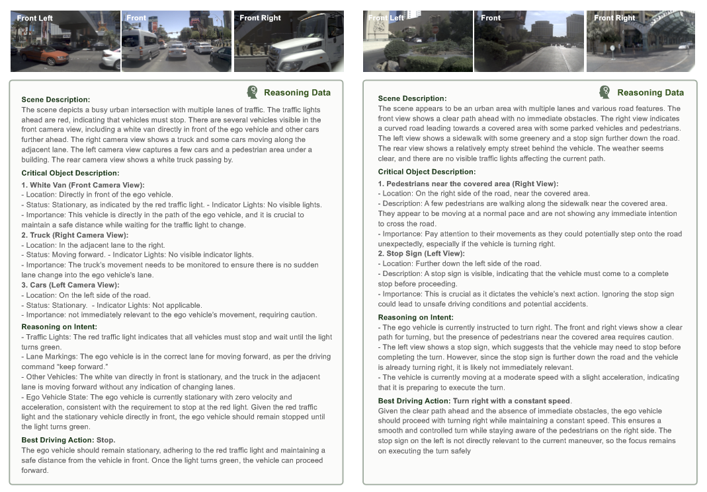
図S4：nuPlan データセットにおける推論データアノテーションの可視化。
図中ラベル：Front Left / Front / Front Right＝左前方／前方／右前方、Reasoning Data＝推論データ。
左の例：シーン記述：複数車線の交通がある混雑した市街地の交差点を描いている。前方の信号は赤であり、車両は停止しなければならないことを示している。前方カメラの視界には、自車の真正面の白いバンやさらに前方の他の車など、数台の車両が見える。右カメラの視界には、隣接車線を走行するトラックと数台の車が映っている。左カメラの視界には、数台の車と建物の下の歩行者エリアが映っている。後方カメラの視界には、通過する白いトラックが映っている。重要物体の記述：1. 白いバン（前方カメラ視界）：－位置：自車の真正面。－状態：赤信号が示すように静止している。－方向指示灯：点灯は見えない。－重要性：この車両は自車の進路上に直接あり、信号が変わるのを待つ間に安全な距離を保つことが極めて重要である。2. トラック（右カメラ視界）：－位置：右側の隣接車線。－状態：前進している。－方向指示灯：点灯は見えない。－重要性：自車の車線への急な車線変更がないことを確認するため、トラックの動きを監視する必要がある。3. 車（左カメラ視界）：－位置：道路の左側。－状態：静止。－方向指示灯：該当なし。－重要性：自車の動きに直ちに関係するものではないが、注意が必要である。意図に関する推論：－信号：赤信号は、信号が青に変わるまですべての車両が停止して待たなければならないことを示している。－車線表示：運転コマンド「keep forward（前進を維持）」のとおり、自車は前進するための正しい車線にいる。－他の車両：真正面の白いバンは静止しており、隣接車線のトラックは車線変更の兆候なく前進している。－自車状態：自車は現在、速度と加速度がゼロで静止しており、赤信号で停止する要件と一致している。赤信号と真正面の静止車両を考えると、自車は信号が青に変わるまで停止を続けるべきである。最適な運転行動：停止。自車は赤信号に従い、前方の車両との安全な距離を保ちながら静止を続けるべきである。信号が青に変われば、車両は前進できる。
右の例：シーン記述：さまざまな道路の特徴と複数の車線がある市街地のようである。前方の視界には差し迫った障害物のない空いた経路が映っている。右の視界には、駐車車両と歩行者がいる屋根付きエリアへと続くカーブした道路が映っている。左の視界には、緑地のある歩道と道路のさらに先の一時停止標識が映っている。後方の視界には、車両の後ろの比較的空いた通りが映っている。天候は晴れているようであり、現在の経路に影響する信号は見えない。重要物体の記述：1. 屋根付きエリア付近の歩行者（右視界）：－位置：道路の右側、屋根付きエリアの近く。－説明：数人の歩行者が屋根付きエリア近くの歩道を歩いている。彼らは普通のペースで動いているようで、すぐに道路を横断する意図は見られない。－重要性：特に車両が右折する場合、予期せず道路に出てくる可能性があるため、彼らの動きに注意を払うこと。2. 一時停止標識（左視界）：－位置：道路の左側のさらに先。－説明：一時停止標識が見えており、車両が進む前に完全に停止しなければならないことを示している。－重要性：車両の次の行動を決定するため極めて重要である。一時停止標識を無視すると危険な運転状況や事故につながる可能性がある。意図に関する推論：－自車は現在右折を指示されている。前方と右の視界には旋回のための空いた経路が映っているが、屋根付きエリア付近の歩行者の存在には注意が必要である。－左の視界には一時停止標識が映っており、旋回を完了する前に車両が停止する必要がある可能性を示唆している。しかし、一時停止標識は道路のさらに先にあり、車両はすでに右折中であるため、直ちに関係するものではない可能性が高い。－車両は現在、わずかに加速しながら中程度の速度で走行しており、旋回を実行する準備をしていることを示している。最適な運転行動：一定速度で右折する。前方の空いた経路と差し迫った障害物がないことを考えると、自車は一定速度を保ちながら右折を進めるべきである。これにより、右側の歩行者に注意を払いつつ、滑らかで制御された旋回が確保される。左の一時停止標識は現在の操作に直接関係しないため、旋回を安全に実行することに集中する。
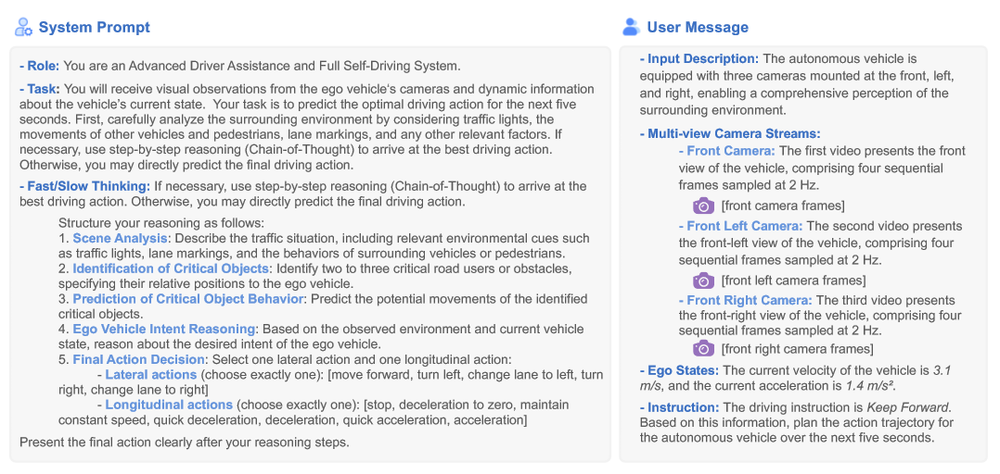
図S5：AutoVLA のシステムプロンプトとユーザメッセージ。
図中ラベル：System Prompt＝システムプロンプト。Role：あなたは先進運転支援および完全自動運転システムである。Task：自車のカメラからの視覚観測と、車両の現在の状態に関する動的情報を受け取る。あなたのタスクは今後 5 秒間の最適な運転行動を予測することである。まず、信号、他の車両や歩行者の動き、車線表示、その他の関連要因を考慮して、周囲の環境を注意深く分析せよ。必要であれば段階的推論（Chain-of-Thought）を用いて最適な運転行動に到達せよ。そうでなければ、最終的な運転行動を直接予測してよい。Fast/Slow Thinking：必要であれば段階的推論（Chain-of-Thought）を用いて最適な運転行動に到達せよ。そうでなければ、最終的な運転行動を直接予測してよい。推論は次のように構成せよ。1. Scene Analysis（シーン解析）：信号、車線表示、周囲の車両や歩行者の挙動などの関連する環境上の手がかりを含め、交通状況を記述せよ。2. Identification of Critical Objects（重要物体の特定）：2〜3 の重要な道路利用者または障害物を特定し、自車に対する相対位置を明示せよ。3. Prediction of Critical Object Behavior（重要物体の挙動予測）：特定した重要物体の潜在的な動きを予測せよ。4. Ego Vehicle Intent Reasoning（自車の意図の推論）：観測した環境と現在の車両状態に基づき、自車の望ましい意図について推論せよ。5. Final Action Decision（最終行動の決定）：横方向の行動と縦方向の行動を 1 つずつ選択せよ。－Lateral actions（横方向の行動、ちょうど 1 つ選ぶ）：[move forward, turn left, change lane to left, turn right, change lane to right]（前進、左折、左へ車線変更、右折、右へ車線変更）－Longitudinal actions（縦方向の行動、ちょうど 1 つ選ぶ）：[stop, deceleration to zero, maintain constant speed, quick deceleration, deceleration, quick acceleration, acceleration]（停止、ゼロまで減速、一定速度を維持、急減速、減速、急加速、加速）。推論ステップの後に最終行動を明確に示せ。User Message＝ユーザメッセージ。Input Description：自動運転車は前方、左、右に取り付けられた 3 台のカメラを備えており、周囲環境の包括的な知覚を可能にしている。Multi-view Camera Streams：－Front Camera：1 本目の映像は車両の前方視界であり、2 Hz でサンプリングした 4 つの連続フレームからなる。[front camera frames（前方カメラのフレーム）] －Front Left Camera：2 本目の映像は車両の左前方視界であり、2 Hz でサンプリングした 4 つの連続フレームからなる。[front left camera frames（左前方カメラのフレーム）] －Front Right Camera：3 本目の映像は車両の右前方視界であり、2 Hz でサンプリングした 4 つの連続フレームからなる。[front right camera frames（右前方カメラのフレーム）] Ego States：車両の現在の速度は 3.1 m/s、現在の加速度は 1.4 m/s² である。Instruction：運転指示は Keep Forward（前進を維持）である。この情報に基づき、今後 5 秒間の自動運転車の行動軌道を計画せよ。
モデルは、システムプロンプトとユーザプロンプトの両方をコンテキスト入力として受け取る。図S5に示すように、システムプロンプトはモデルの役割、タスク、期待される CoT 推論の形式を定義する。ユーザメッセージは、マルチビューのカメラ観測、自車の現在の状態（すなわち速度と加速度）と任意で過去の状態、および高レベルの運転指示を記述する。3 つのカメラ視点（前方、左前方、右前方）を用い、それぞれが 4 つの連続フレームを提供する。映像ストリーム中の画像は、元のアスペクト比を保ちつつ \(28 \times 28 \times 128\) ピクセルに縮小してリサイズされる（訳注：画像サイズとしては不自然な表記であり、Qwen2.5-VL の画素数上限設定（総画素数 28×28×128）を指すものと考えられる）。
アルゴリズム1：GRPO による AutoVLA の RFT
入力：教師ありファインチューニング済み方策 \(\pi_{\text{SFT}}\)、行動コードブック \(\mathcal{A}\)、グループサイズ \(G\)、学習ステップ数 \(K\)、データセット \(D\)、運転報酬関数 \(r_{\text{Driving}}\)、推論報酬関数 \(r_{\text{CoT}}\)、バランスの重み \(\lambda_r\)、KL 正則化の重み \(\beta\)
出力：強化ファインチューニング済み方策 \(\pi_{\text{RFT}}\)
- 参照方策 \(\pi_{ref} \leftarrow \pi_{\text{SFT}}\) と現在の方策 \(\pi_\theta \leftarrow \pi_{\text{SFT}}\) を初期化する
- for 学習ステップ 1 から \(K\) まで do
- D からシナリオ \(U\) をサンプリングする
- for サンプル \(i\) を 1 から \(G\) まで do
- 入力クエリ \(q\)、最終出力 \(o_i\)、トークンごとの確率 \(\pi_\theta(o_i|q)\) をサンプリングする
- \(\pi_{\theta_{old}}(o_i|q) \leftarrow \pi_\theta(o_i|q)\)
- \(o_i\) の下での \(\pi_{ref}\) のトークンごとの確率 \(\pi_{ref}(o_i|q)\) を計算する
- 軌道をデコードする \(\tau \leftarrow \mathcal{A}(o_i)\)
- 報酬を計算する \(r_i \leftarrow r_{\text{Driving}}(\tau, U) - \lambda_{\text{r}} r_{\text{CoT}}(o_i)\)
- end for
- グループ平均報酬 \(\bar{r},\ \sigma_r \leftarrow \text{mean}(r_1, \ldots, r_G),\ \text{std}(r_1, \ldots, r_G)\)
- グループ相対アドバンテージ \(A_i \leftarrow (r_i - \bar{r})/(\sigma_r)\)
- \(\mathcal{L}_{\text{RFT}} \leftarrow -\sum_i^G\left(-\frac{\pi_\theta(o_i|q)}{\pi_{\theta_{\text{old}}}(o_i|q)}A_i + \beta\mathbb{D}_{\text{KL}}(\pi_\theta(o_i|q) \| \pi_{\text{ref}}(o_i|q))\right)\)
- \(\mathcal{L}_{\text{RFT}}\) に従って \(\pi_\theta\) を最適化する
- end for
- return 収束した方策 \(\pi_{\text{RFT}}\)
（訳注：13 行目の式は括弧の外に負号があるため、展開すると \(\sum_i (\text{ratio}\cdot A_i - \beta\mathbb{D}_{\text{KL}})\) すなわち式(3)の目的関数そのものとなり、最小化すべき損失としては符号が逆になっている。原文のまま掲載した。）
Group Relative Policy Optimization（GRPO）は、従来の状態価値推定器やクリティックモデルの代わりに、グループベースのサンプリングを用いてアドバンテージ関数を計算する。この設計は学習を加速すると同時に、候補軌道の集合を評価し選択することを要する計画の本質的なマルチモーダル性と自然に合致する。強化ファインチューニング（RFT）の全体手順をアルゴリズム1に示す。
参照方策に対して現在の方策を正則化するため、式(3)に KL ダイバージェンス項 \(\mathbb{D}_{\text{KL}}\) を組み込む。
\[ \mathbb{D}_{\text{KL}}(\pi_\theta \| \pi_{\text{ref}}) = \frac{\pi_{\text{ref}}(o_i|q)}{\pi_\theta(o_i|q)} - \log\left(\frac{\pi_{\text{ref}}(o_i|q)}{\pi_\theta(o_i|q)}\right) - 1, \tag{S1} \]
ここで \(\theta\) は現在の方策 \(\pi_\theta\) のパラメータ、\(q\) はシナリオ入力クエリ、\(o_i\) はグループ内の \(i\) 番目のサンプルの出力、\(\pi_{\text{ref}}\) は SFT 段階の参照方策を表す。この正則化項は参照方策からの大きな逸脱にペナルティを課し、方策の更新が安定な領域内にとどまることを保証する。その結果、モデルは SFT 中に獲得した有用な知識を保持しつつ、検証済みの報酬関数に導かれた強化学習を通じて運転挙動を改善する。
報酬関数は RFT の主要な学習信号を提供し、方策更新の最適化を導く。熟練者の運転の模倣を超えて総合的な運転性能をさらに高めるため、主たる運転報酬 \(r_{\text{Driving}}\) と、冗長な推論を抑制する CoT ペナルティ \(r_{\text{CoT}}\) を統合したハイブリッドな報酬設計を採用する。NAVSIM ベンチマークでは、Predictive Driver Model Score（PDMS）［51］を主たる報酬として用いる。Waymo End-to-End データセットでは、RFS のアノテーションが限られているため、（正規化した）平均変位誤差（ADE）を運転報酬として用いる。重み係数 \(\lambda_r\) でバランスをとった最終的な報酬関数は次のように定義される。
\[ r = r_{\text{Driving}} - \lambda_r r_{\text{CoT}}. \tag{S2} \]
nuPlan データセットでは、運転品質の総合的な尺度として機能する PDMS スコアを運転報酬信号 \(r_{\text{Driving}}\) として採用する。これは次のように定義される。
\[ r_{\text{Driving}} = \text{PDMS} = \text{NC} \times \text{DAC} \times \left(\frac{5\text{TTC} + 2\text{C} + 5\text{EP}}{12}\right), \tag{S3} \]
ここで構成要素は、過失なし衝突（No at-fault Collision, NC）、走行可能領域遵守（Drivable Area Compliance, DAC）、自車進捗（Ego Progress, EP）、快適性（Comfort, C）、衝突余裕時間（Time-to-Collision, TTC）である。各構成要素の詳細な説明は［51］にある。各サブスコアは百分率で表され、それらの重み付き組み合わせにより、安全性、快適性、進捗の側面を反映した \([0, 1]\) の範囲の正規化スコアが得られる。プランナが（出力エラーにより）失敗したシナリオには、スコア 0 を割り当てる。
Waymo データセットでは、ADE 指標に基づいて運転報酬 \(r_{\text{Driving}}\) を定義する。
\[ r_{\text{Driving}} = \frac{\delta - ADE}{\kappa}, \ \text{ADE} = \frac{1}{T}\sum_{t=1}^{T}\|\hat{\mathbf{y}}_t - \mathbf{y}_t\|_2, \tag{S4} \]
ここで \(\delta\) は最大変位誤差を表し、\(\kappa\) は報酬を正規化するためのスケーリング係数である。計画軌道 \(\hat{\mathbf{y}}\) は正解軌道 \(\mathbf{y}\) と比較して評価され、ADE は \(T\) 時間ステップにわたる L2 距離の平均として計算される。
過度に長い推論の連鎖にペナルティを課すため、推論の長さを正規化するシグモイド関数を介して定義される CoT ペナルティ項 \(r_{\text{CoT}}\) を導入する。
\[ r_{\text{CoT}} = \frac{1}{1 + e^{-(L - L_{tol})\gamma}}, \tag{S5} \]
ここで \(L\) は CoT 推論の長さ、\(L_{tol}\) は許容しきい値、\(\gamma\) はペナルティ曲線の急峻さを制御するスケーリング係数である。
NAVSIM ベンチマークの RFT には nuPlan データセットの navtrain 分割を、Waymo ベンチマークには Waymo End-to-End 運転データセットの validation 分割を用いる。事前学習済み AutoVLA の視覚エンコーダは凍結し、学習コストとメモリ消費を削減するため Low-Rank Adaptation（LoRA）を用いてモデルをファインチューニングする。具体的には、LoRA のランクとアルファをいずれも 8 とし、ドロップアウト率を 0.1 とする。最適化中は、事前学習済みの SFT モデルを参照方策として用いる。ハイパーパラメータ \(\gamma\)、\(L_{tol}\)、学習率はそれぞれ \(2 \times 10^{-3}\)、400、\(3 \times 10^{-5}\) に設定する。運転報酬信号が支配的になるよう、正則化の重みは比較的小さい値 \(\lambda_r = 0.3\) に設定する。また、Waymo データセットの RFT では \(\delta = 2\)、\(\kappa = 10\) とする。さらに、GRPO のサンプリング中に多様で探索的な生成を促すため、生成パラメータをサンプリング温度 1.0、top-p 1.0、top-k 0.0 に設定し、取りうる行動のより広い範囲を効果的にカバーする。
複数の運転データセットにわたる混合学習を可能にするため、すべてのデータセットの形式を標準化する統一的なデータ前処理パイプラインを開発する。各サンプルについて、次のものを抽出し標準化する。1）自車座標系における 2 Hz の正解軌道の座標と方位、2）2 Hz で取得した 4 つの連続フレーム（2 秒間の履歴を提供）からなるマルチビューカメラ画像系列の画像パス、3）CoT 推論アノテーション、4）現在の速度と加速度を含む車両状態、5）高レベルの運転指示。前処理パイプラインは、データ形式、サンプリングレート、座標系におけるデータセット固有の違いを処理し、一貫した形式を作り出す。最終的に整形されたデータセットの規模と分布を表S1に示す。
nuPlan（NAVSIM）。nuPlan の trainval 分割から 45.6k のシナリオをランダムにサンプリングし、提案する自動アノテーションパイプラインを用いて推論データを生成する。得られた推論サンプルと、軌道アノテーションのみを持つ残りの学習データとを合わせて、nuPlan の完全な学習セットを構成する。NAVSIM ベンチマークに従い、navtest 分割をテストセットとして用いる。
| データセット | 学習サンプル | 推論サンプル | テストサンプル |
|---|---|---|---|
| nuPlan (NAVSIM)［51］ | 166.3k | 45.6k | 12.1k |
| nuScenes［53］ | 19.0k | 2.9k | 5.6k |
| Waymo［52］ | 23.8k | 7.2k | 1.5k |
| CARLA［96］ | 274.5k | 53.2k | – |
表S1：各データセットの学習データとテストデータの規模。
nuScenes。training セットのすべてのサンプルを前処理する。DriveLM データセットに含まれるサンプルについては、質問応答（QA）ペアを再フォーマットし、我々の 4 段階の推論形式に従った構造化推論アノテーションを生成する。DriveLM でカバーされないサンプルも学習に用いるが、軌道の教師のみとする。テストには validation セットを用いる。
Waymo。Waymo End-to-End 運転データセットは 2037 の training セグメントと 479 の validation セグメントを提供し、各セグメントは全期間の運転ログを伴う 20 秒の映像を含む。推論データは 4 秒のスライディングウィンドウでサンプリングし、軌道のみのデータは推論サンプルから 1 秒ずらした 2 秒のスライディングウィンドウで抽出する。位置データのノイズにより、車両が静止しているときに推定される車両の方位が急激に変動することがある。この問題に対処するため、運動のしきい値を適用して静止期間を検出し、それに応じて方位を平滑化する。test セットは 1505 サンプルからなる。
CARLA。クローズドループ評価のためのモデル学習には CARLA-Garage データセットを用いる。前方カメラ画像しか利用できないため、CARLA の学習とテストには単一視点の入力（4 つの連続フレーム）を用いる。0.5 秒のオフセットを持つスライディングウィンドウでデータをサンプリングし、軌道を 4 Hz から 2 Hz にダウンサンプリングする。推論アノテーションには、DriveLM-nuScenes と同様の QA ペアを提供する DriveLM-CARLA データセットを活用し、QA ペアを再フォーマットして推論アノテーション付きのサンプルを生成する。
nuPlan（NAVSIM）。PDMS は nuPlan データセット上の NAVSIM における公式のベンチマーク指標であり、その定式化は式(S3)に示されている。
nuScenes。先行研究に従い、予測軌道と正解軌道の間の平均変位誤差を測るために L2 距離を採用し、予測軌道が周囲の物体と重なる頻度を評価するために衝突率を用いる。UniAD のプロトコルに従い、ホライズン全体で平均するのではなく、両指標を 1、2、3 秒先の時点で報告する。
Waymo。Waymo End-to-End 運転ベンチマークに従い、運転性能の評価には Rater Feedback Score（RFS）を用いる。Waymo データセットは人手でアノテーションされた 3 本の軌道を提供し、それぞれに \([0, 10]\) のスカラーの品質スコアが付与されている。計画軌道は最も近い参照軌道と照合され、固定時刻（3 s と 5 s）における横方向と縦方向のしきい値を用いて、その周囲に信頼領域が定義される。これらのしきい値は、評価者の軌道の初速度に関する区分線形関数によってスケーリングされる。信頼領域内の予測は照合された評価者のスコアを引き継ぎ、領域外の予測は正規化された逸脱に基づいて指数関数的にペナルティを受ける（訳注：原文はこの文末が「deviation.tr」となっており、末尾の「tr」は誤植と思われる）。
CARLA。Bench2Drive ベンチマーク［51］に従い、Driving Score（運転スコア）、Success Rate（成功率）、Efficiency（効率）、Comfortness（快適性）という 4 つの主要な指標を用いて、クローズドループテストにおける運転性能を評価する（訳注：Bench2Drive は参考文献［54］であり、［51］は NAVSIM を指す。原文の引用番号の誤りと思われる）。運転スコアは、違反の深刻度によってペナルティを課した全体的なルート完遂度を反映する。成功率は、制限時間内に重大な違反なく完遂したルートの割合を測る。効率は、自車が周囲の交通に対してどれだけ適切な速度を維持しているかを定量化し、複数のチェックポイントにおける平均速度比として計算される。快適性は、熟練者に基づくしきい値を用い、加速度、ジャーク、ヨーレートなどの物理信号に基づいて軌道の滑らかさを評価する。
主要なベースモデルは、nuPlan と nuScenes のデータセットの混合学習セットで学習する。自車状態は車両の現在の速度と加速度を含む。Waymo End-to-End 運転データセットでのテストのために、このベースモデルを Waymo End-to-End 運転データセットを用いてさらにファインチューニングする。Waymo で学習したモデルでは、自車の状態は現在の加速度と、4 秒間の車両の位置と速度の履歴を含む。クローズドループのシミュレーションテストのためには、CARLA Garage データセットと DriveLM-CARLA のアノテーションから前処理したデータを用いて別のモデルを学習する。このモデルは、主要モデルで用いるマルチビュー構成ではなく単一視点の入力で学習し、入力画像には大きな解像度（\(28 \times 28 \times 384\) ピクセル）を用いる。
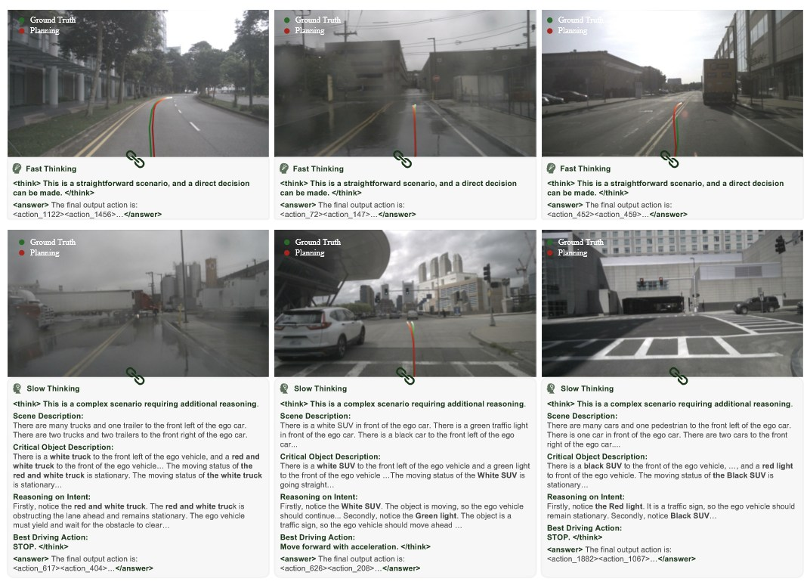
図S6：nuScenes データセットにおける AutoVLA の計画と推論の結果。
図中ラベル：Ground Truth＝正解、Planning＝計画、Fast Thinking＝高速思考、Slow Thinking＝低速思考。上段（高速思考）の think：「これは単純なシナリオであり、直接判断できる。」、answer：最終出力行動は <action_1122><action_1456>…／<action_72><action_147>…／<action_452><action_459>…。下段（低速思考）、いずれも「これは追加の推論を要する複雑なシナリオである。」で始まる。左：シーン記述：自車の左前方に多数のトラックと 1 台のトレーラーがある。自車の右前方に 2 台のトラックと 2 台のトレーラーがある。重要物体の記述：自車の左前方に白いトラックがあり、自車の前方に赤と白のトラックがある…赤と白のトラックの移動状態は静止である。白いトラックの移動状態は静止である… 意図に関する推論：まず、赤と白のトラックに注意する。赤と白のトラックは前方の車線を塞いでおり、静止したままである。自車は道を譲り、障害物がなくなるのを待たなければならない… 最適な運転行動：停止（STOP）。最終出力行動：<action_617><action_404>…。中央：シーン記述：自車の前方に白い SUV がある。自車の前方に青信号がある。自車の左前方に黒い車がある… 重要物体の記述：自車の左前方に白い SUV があり、自車の前方に青信号がある…白い SUV の移動状態は直進である… 意図に関する推論：まず、白い SUV に注意する。この物体は動いているので、自車は進み続けるべきである…次に、青信号に注意する。この物体は交通標識であるので、自車は前進すべきである… 最適な運転行動：加速しながら前進する。最終出力行動：<action_626><action_208>…。右：シーン記述：自車の左前方に多数の車と 1 人の歩行者がいる。自車の前方に 1 台の車がある。自車の右前方に 2 台の車がある… 重要物体の記述：自車の前方に黒い SUV があり、…、自車の前方に赤信号がある。黒い SUV の移動状態は静止である… 意図に関する推論：まず、赤信号に注意する。これは交通標識であるので、自車は静止したままでいるべきである。次に、黒い SUV に注意する… 最適な運転行動：停止（STOP）。最終出力行動：<action_1882><action_1067>…
| 手法 | ST-P3 metrics（ST-P3 指標） | UniAD metrics（UniAD 指標） | ||||||||||||||
|---|---|---|---|---|---|---|---|---|---|---|---|---|---|---|---|---|
| L2 (m) ↓ | Collision (%) ↓ | L2 (m) ↓ | Collision (%) ↓ | |||||||||||||
| 1s | 2s | 3s | Avg. | 1s | 2s | 3s | Avg. | 1s | 2s | 3s | Avg. | 1s | 2s | 3s | Avg. | |
| ST-P3［14］ | 1.33 | 2.11 | 2.90 | 2.11 | 0.23 | 0.62 | 1.27 | 0.71 | - | - | - | - | - | - | - | - |
| VAD［66］ | 0.17 | 0.34 | 0.60 | 0.37 | 0.07 | 0.10 | 0.24 | 0.14 | - | - | - | - | - | - | - | - |
| UniAD［65］ | 0.44 | 0.67 | 0.96 | 0.69 | 0.04 | 0.08 | 0.23 | 0.12 | 0.48 | 0.96 | 1.65 | 1.03 | 0.05 | 0.17 | 0.71 | 0.31 |
| EMMA［37］ | 0.14 | 0.29 | 0.54 | 0.32 | - | - | - | - | - | - | - | - | - | - | - | - |
| OpenEMMA［44］ | 1.45 | 3.21 | 3.76 | 2.81 | - | - | - | - | - | - | - | - | - | - | - | - |
| OpenDriveVLA-3B［34］ | 0.14 | 0.30 | 0.55 | 0.33 | 0.02 | 0.07 | 0.22 | 0.10 | 0.19 | 0.58 | 1.24 | 0.67 | 0.02 | 0.18 | 0.70 | 0.30 |
| AutoVLA (action only) | 0.22 | 0.39 | 0.61 | 0.41 | 0.10 | 0.17 | 0.28 | 0.18 | 0.29 | 0.67 | 1.17 | 0.71 | 0.15 | 0.34 | 0.56 | 0.35 |
| AutoVLA (w/ CoT) | 0.21 | 0.38 | 0.60 | 0.40 | 0.13 | 0.18 | 0.28 | 0.20 | 0.28 | 0.66 | 1.16 | 0.70 | 0.14 | 0.25 | 0.53 | 0.31 |
表S2：nuScenes 計画ベンチマークにおける AutoVLA のテスト結果（L2：L2 距離、Collision：衝突率）。
推論と計画の出力を生成するために、top-p と top-k サンプリングを用いた確率的な生成戦略を採用する。より高いサンプリング多様性（例えば temperature=1.0、top-p=0.5、top-k=20）は低速思考モードを支え、モデルがより深く精緻な推論の連鎖を生成することを可能にする。対照的に、より決定論的な設定（例えば temperature=0.1、top-p=0.01、top-k=1）は高速思考を生み、一貫した直接的な応答をもたらす。
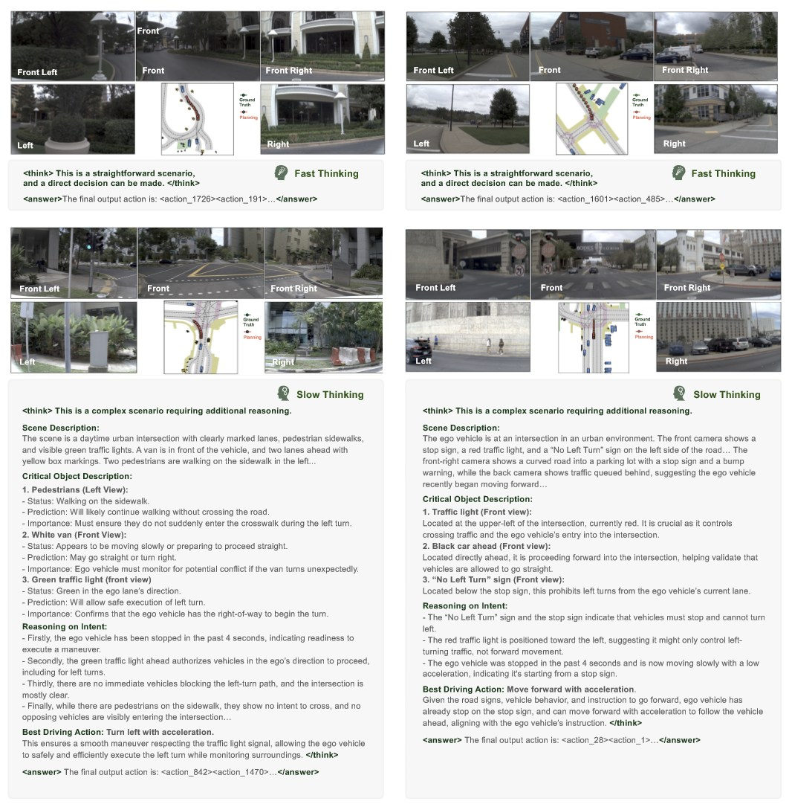
図S7：nuPlan データセットにおける AutoVLA の計画と推論の結果。
図中ラベル：Front Left / Front / Front Right / Left / Right＝左前方／前方／右前方／左／右、Ground Truth＝正解、Planning＝計画、Fast Thinking＝高速思考、Slow Thinking＝低速思考。上段（高速思考）の think：「これは単純なシナリオであり、直接判断できる。」、answer：最終出力行動は <action_1726><action_191>…／<action_1601><action_485>…。
下段左（低速思考）：「これは追加の推論を要する複雑なシナリオである。」シーン記述：はっきりと区画された車線、歩行者用歩道、見える青信号のある日中の市街地の交差点である。車両の前方にバンがいて、前方の 2 車線には黄色のボックスマーキングがある。左側の歩道を 2 人の歩行者が歩いている… 重要物体の記述：1. 歩行者（左視界）：－状態：歩道を歩いている。－予測：道路を横断せずに歩き続ける可能性が高い。－重要性：左折中に突然横断歩道に入ってこないことを確認しなければならない。2. 白いバン（前方視界）：－状態：ゆっくり動いているか直進する準備をしているように見える。－予測：直進または右折する可能性がある。－重要性：バンが予期せず曲がった場合の潜在的な衝突に備え、自車は監視しなければならない。3. 青信号（前方視界）：－状態：自車の車線方向が青。－予測：左折の安全な実行を可能にする。－重要性：自車が旋回を開始する優先権を持つことを確認する。意図に関する推論：－第一に、自車は過去 4 秒間停止しており、操作を実行する準備ができていることを示している。－第二に、前方の青信号は、左折を含め自車の方向の車両に進行を許可している。－第三に、左折経路を塞ぐ車両は差し迫っておらず、交差点はほぼ空いている。－最後に、歩道には歩行者がいるが横断する意図は見られず、交差点に進入する対向車両も見えない… 最適な運転行動：加速しながら左折する。これにより、信号に従った滑らかな操作が確保され、周囲を監視しながら自車が安全かつ効率的に左折を実行できる。最終出力行動：<action_842><action_1470>…
下段右（低速思考）：「これは追加の推論を要する複雑なシナリオである。」シーン記述：自車は都市環境の交差点にいる。前方カメラには一時停止標識、赤信号、道路左側の「No Left Turn（左折禁止）」標識が映っている… 右前方カメラには一時停止標識と段差の警告がある駐車場へと続くカーブした道路が映り、後方カメラには後ろに並ぶ交通が映っており、自車が最近前進し始めたことを示唆している… 重要物体の記述：1. 信号（前方視界）：交差点の左上に位置し、現在は赤である。交差する交通と自車の交差点への進入を制御するため極めて重要である。2. 前方の黒い車（前方視界）：真正面に位置し、交差点へと前進しており、車両が直進を許可されていることの確認に役立つ。3.「No Left Turn」標識（前方視界）：一時停止標識の下に位置し、自車の現在の車線からの左折を禁止している。意図に関する推論：－「No Left Turn」標識と一時停止標識は、車両が停止しなければならず左折できないことを示している。－赤信号は左向きに設置されており、左折する交通のみを制御し、前進は制御していない可能性を示唆している。－自車は過去 4 秒間停止しており、現在は低い加速度でゆっくりと動いており、一時停止標識から発進していることを示している。最適な運転行動：加速しながら前進する。道路標識、車両の挙動、前進せよという指示を踏まえると、自車はすでに一時停止標識で停止しており、自車の指示に沿って、前方の車両に追従して加速しながら前進できる。最終出力行動：<action_28><action_1>…
ST-P3［14］と UniAD［65］の両方のプロトコルに従い、最先端の End-to-End モデルと比較して nuScenes データセットで AutoVLA を評価する。表S2に示すように、我々のモデルは nuScenes 計画ベンチマークにおいて競争力のある性能を示した。
図S6は AutoVLA の計画出力を示している。モデルは正解の動きによく一致する安全な軌道を生成し、首尾一貫した文脈に即した推論出力を伴っている。しかし、nuScenes のシナリオの多くは比較的単純で、複雑な推論を必要としないことが多いことが観察される。これが、推論を導入した際に定量的指標で性能向上が見られないことの説明となる可能性がある。
nuPlan データセットにおける我々のモデルの追加の可視化結果を図S7に示す。カーブした道路や交差点のような比較的単純なシナリオでは、我々のモデルは高速思考によって高品質な軌道を生成する。多くの交通規制を伴うより複雑なシーンでは、低速思考を活用して CoT 推論を伴うより良い、規制に準拠した計画結果を生成する。図S8に示すように、我々の AutoVLA モデルは、RFT 後に冗長な推論を取り除いたにもかかわらず、複雑なシナリオでの推論能力を保持している。定性的な比較は、RFT が複雑なシナリオでの計画性能を向上させることを示している。
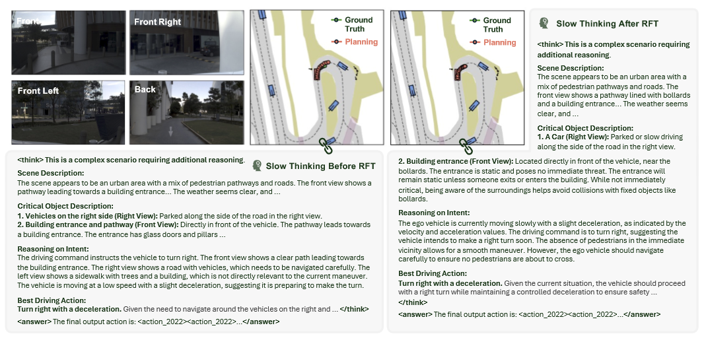
図S8：複雑なシナリオにおける RFT 前後の計画と推論の性能の定性的比較。結果は、RFT が複雑なシナリオでの推論能力を維持しつつ計画性能を向上させることを示している。
図中ラベル：Front / Front Right / Front Left / Back＝前方／右前方／左前方／後方、Ground Truth＝正解、Planning＝計画、Slow Thinking Before RFT＝RFT 前の低速思考、Slow Thinking After RFT＝RFT 後の低速思考。
RFT 前：「これは追加の推論を要する複雑なシナリオである。」シーン記述：歩行者用通路と道路が混在する市街地のようである。前方の視界には建物の入口へと続く通路が映っている…天候は晴れているようであり、… 重要物体の記述：1. 右側の車両（右視界）：右視界の道路脇に駐車している。2. 建物の入口と通路（前方視界）：車両の真正面。通路は建物の入口へと続いている。入口にはガラス扉と柱がある… 意図に関する推論：運転コマンドは車両に右折を指示している。前方の視界には建物の入口へと続く空いた経路が映っている。右の視界には車両のいる道路が映っており、注意して通過する必要がある。左の視界には木々と建物のある歩道が映っているが、現在の操作には直接関係しない。車両はわずかに減速しながら低速で走行しており、旋回の準備をしていることを示唆している。最適な運転行動：減速しながら右折する。右側の車両の周囲を進む必要があることから… 最終出力行動：<action_2022><action_2022>…
RFT 後：「これは追加の推論を要する複雑なシナリオである。」シーン記述：歩行者用通路と道路が混在する市街地のようである。前方の視界にはボラードが並ぶ通路と建物の入口が映っている…天候は晴れているようであり、… 重要物体の記述：1. 車（右視界）：右視界の道路脇に駐車しているか低速で走行している。2. 建物の入口（前方視界）：車両の真正面、ボラードの近くに位置する。入口は静的であり、差し迫った脅威はない。誰かが建物に出入りしない限り、入口は静的なままである。直ちに重要ではないが、周囲を把握しておくことはボラードのような固定物との衝突を避けるのに役立つ。意図に関する推論：速度と加速度の値が示すように、自車は現在わずかに減速しながらゆっくり動いている。運転コマンドは右折であり、車両が間もなく右折するつもりであることを示唆している。すぐ近くに歩行者がいないため、滑らかな操作が可能である。しかし、自車は歩行者が横断しようとしていないことを確認するため慎重に進むべきである。最適な運転行動：減速しながら右折する。現在の状況を踏まえ、安全を確保するために制御された減速を維持しながら右折を進めるべきである… 最終出力行動：<action_2022><action_2022>…
| 手法名 | RFS (Overall) ↑ | ADE at 5s (Overall) ↓ | ADE at 3s (Overall) ↓ | RFS (Spotlight) ↑ |
|---|---|---|---|---|
| Poutine | 7.9860 | 2.7419 | 1.2055 | 6.8929 |
| HMVLM | 7.7367 | 3.0715 | 1.3269 | 6.7269 |
| UniPlan | 7.6925 | 2.9864 | 1.3083 | 6.6544 |
| DiffusionLTF | 7.5919 | 2.9768 | 1.3605 | 6.5688 |
| AutoVLA | 7.5566 | 2.9580 | 1.3507 | 6.9436 |
| Swin-Trajectory | 7.5432 | 2.8135 | 1.2082 | 6.6791 |
| waymo | 7.5281 | 3.0182 | 1.3200 | 6.5953 |
| ViT-Adapter-GRU | 7.4988 | 2.7024 | 1.1968 | 6.4543 |
| DriveTraj | 7.4957 | 2.9556 | 1.3038 | 6.4101 |
| open-llama | 7.4288 | 3.2165 | 1.3140 | 6.2510 |
| MTR-VP | 7.3433 | 3.3485 | 1.4232 | 6.4023 |
| WayPredict-XL | 7.2922 | 3.2915 | 1.4385 | 6.3083 |
| DriveTraj | 7.2787 | 3.4573 | 1.5346 | 6.2428 |
| WayPredict | 7.0641 | 3.5779 | 1.7242 | 5.8562 |
| LightEMMA | 6.5169 | 3.7395 | 1.7052 | 5.7103 |
| FrozenResNet50 | 6.4719 | 3.9148 | 1.9446 | 5.7977 |
| OpenEMMA | 5.1575 | 12.4755 | 6.6842 | 4.7131 |
表S3：Waymo 視覚ベース End-to-End 運転チャレンジのリーダーボード（RFS (Overall)：RFS（全体）、ADE at 5s／3s (Overall)：5 秒／3 秒時点の ADE（全体）、RFS (Spotlight)：RFS（スポットライト））。
Waymo End-to-End 運転データセットの規模が限られていることを克服するため、nuPlan と nuScenes のデータセットからのサンプルで学習データを拡張する。便宜上、この結合データセットを nuX と呼ぶ。この nuX データを用いてモデルを事前学習した後、Waymo データセットでファインチューニングする。計画性能をさらに高めるため、SFT 後の AutoVLA モデルに RFT を適用する。RFS ラベル付きのサンプル数が限られている（検証セットで 480 のみ）ことから、平均変位誤差（ADE）を主たる報酬信号として採用する。
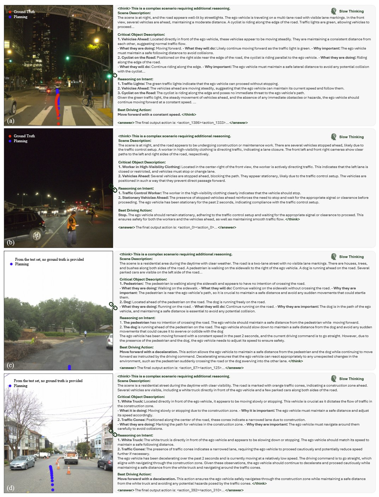
図S9：Waymo End-to-End 運転データセットにおける AutoVLA の計画と推論の結果。
図中ラベル：Ground Truth＝正解、Planning＝計画、From the test set, no ground truth is provided＝テストセットからの例であり正解は提供されていない、Slow Thinking＝低速思考。いずれの推論も「これは追加の推論を要する複雑なシナリオである。」で始まる。
(a) シーン記述：夜間であり、道路は街灯で十分に照らされているようである。自車は車線表示の見える多車線道路を走行している。前方の視界では、数台の車両が適度な距離を保って前方にいる。自転車が道路の端に沿って走行している。信号は青であり、車両は進むことができる… 重要物体の記述：1. 前方の車両：自車の真正面に位置し、着実に動いているように見える。互いに一定の距離を保っており、通常の交通流であることを示唆している。－何をしているか：前進している。－何をするか：信号が青なので前進を続ける可能性が高い。－なぜ重要か：自車は衝突を避けるため安全な車間距離を保たなければならない。2. 道路上の自転車：道路の端近くの右側に位置し、自車と平行に走行している。－何をしているか：道路の端に沿って走行している。－何をするか：端に沿って走行を続ける。－なぜ重要か：潜在的な衝突を避けるため、自車は自転車との安全な横方向距離を保たなければならない… 意図に関する推論：1. 信号：青信号は自車が停止せずに進めることを示している。2. 前方の車両：前方の車両は着実に動いており、自車が現在の速度を維持して追従できることを示唆している。3. 道路上の自転車：自転車は端に沿って走行しており、自車の進路に差し迫った脅威を与えない。青信号、前方車両の着実な動き、差し迫った障害物や危険がないことから、自車は一定速度で前進を続けるべきである… 最適な運転行動：一定速度で前進する。最終出力行動：<action_1386><action_1333>…
(b) シーン記述：夜間であり、道路は工事中または保守作業中のようである。前方には数台の車両が停止しており、おそらく交通規制のためである。高視認性の服を着た作業員が交通を誘導しており、車線閉鎖を示している。左前方と右前方のカメラには、それぞれ道路の左側と右側に空いた経路が映っている。重要物体の記述：1. 高視認性の服を着た作業員：前方視界の中央右寄りに位置し、作業員は積極的に交通を誘導している。これは左車線が閉鎖または制限されており、車両は停止するか車線変更しなければならないことを示している。2. 前方の車両：数台の車両が前方で停止し、経路を塞いでいる。おそらく交通規制のために静止しているようである。車両は前方への直接の通行を妨げるように位置している。意図に関する推論：1. 交通誘導員：高視認性の服を着た作業員は、車両が停止すべきことを明確に示している。2. 前方の静止車両：前方に停止車両がいることは、進む前に適切な合図または進路の確保を停止して待つ必要性を強めている。自車は過去 2 秒間静止しており、交通規制に従っていることを示している。最適な運転行動：停止。自車は交通規制に従い、進むための適切な合図または進路の確保を待って静止を続けるべきである。これにより、作業員と前方の車両の両方の安全が確保されるとともに、円滑な交通の流れが維持される。最終出力行動：<action_0><action_0>…
(c) シーン記述：晴天の日中の住宅地である。道路は車線表示の見えない 2 車線の通りである。道路の両側に家、木、茂みがある。自車の右側の歩道を歩行者が歩いている。犬が道路の前方を走っている。道路の左側に数台の駐車車両が見える… 重要物体の記述：1. 歩行者：歩行者は歩道に沿って歩いており、道路を横断する意図はないように見える。－何をしているか：歩道を歩いている。－何をするか：道路を横断せずに歩道を歩き続ける。－なぜ重要か：歩行者は自車の進路の近くにいるため、安全な距離を保ち、歩行者を驚かせるような急な動きを避けることが極めて重要である。2. 犬：道路上の歩行者の前方に位置する。犬は道路上を自由に走っている。－何をしているか：道路を走っている。－何をするか：道路を走り続ける。－なぜ重要か：犬は自車の進路上にいるため、潜在的な衝突を避けるには安全な距離を保つことが不可欠である。意図に関する推論：1. 歩行者は道路を横断する意図がない。自車は前進しながら歩行者との安全な距離を保つべきである。2. 犬は道路上で歩行者の前方を走っている。自車は減速して犬との安全な距離を保ち、犬が進路を外れたり衝突したりする原因となりうる急な動きを避けるべきである。自車は過去 2 秒間一定速度で前進しており、現在の運転コマンドは直進である。しかし、歩行者と犬の存在により、自車は安全を確保するため速度を調整する必要がある。最適な運転行動：減速しながら前進する。この行動により、自車は運転コマンドの指示どおり前進を続けながら、歩行者と犬との安全な距離を保つことができる。減速することで、歩行者が突然道路を横断したり犬が別の車線へ逸れたりするなど、環境の予期せぬ変化にも自車が適切に対応できる。最終出力行動：<action_87><action_125>…
(d) シーン記述：見通しの良い日中の住宅街の通りである。道路にはオレンジ色のトラフィックコーンが置かれており、前方の工事区域を示している。自車の真正面の白いトラックや、道路の両側に駐車された数台の車など、数台の車両が見える。重要物体の記述：1. 白いトラック：自車の真正面に位置し、ゆっくり動いているか停止しつつあるように見える。この車両は工事区域内の交通の流れを決定づけるため極めて重要である。－何をしているか：工事区域のためゆっくり動いているか停止しつつある。－なぜ重要か：自車は安全な距離を保ち、それに応じて速度を調整しなければならない。2. トラフィックコーン：道路の中央に沿って置かれ、工事のため車線が狭くなっていることを示している。－何をしているか：工事区域内の車両の経路を示している。－なぜ重要か：自車は衝突を避けるためにこれらを注意深く避けて進まなければならない。意図に関する推論：1. 白いトラック：白いトラックは自車の真正面にいて、減速しているか停止しつつあるように見える。自車は安全な車間距離を保つためにその速度に合わせるべきである。2. トラフィックコーン：トラフィックコーンの存在は車線が狭くなっていることを示しており、自車は慎重に進み、必要であればさらに速度を落とす必要がある。自車は過去 2 秒間減速しており、現在は比較的低速で走行している。運転コマンドは直進であり、工事区域を通過することと整合している。これらの観測から、自車は減速を続け、白いトラックとの安全な距離を保ちトラフィックコーンを避けながら慎重に進むべきである。最適な運転行動：減速しながら前進する。この行動により、白いトラックとの安全な距離を保ち、トラフィックコーンによる潜在的な危険を避けながら、自車は工事区域を安全に通過できる。最終出力行動：<action_392><action_310>…
2025 年 5 月 22 日時点で、表S3に示すように、AutoVLA は Waymo End-to-End Driving Challenge のリーダーボードで競争力のある性能を達成している。モデルは RFS Overall と ADE の両指標で上位にランクされ、最も困難なシナリオに焦点を当てた RFS Spotlight 指標で最高スコアを達成している。定性的な結果を図S9に示す。AutoVLA は複雑な環境で安全かつ文脈に即した軌道を生成する能力を示している。モデルは多様なシナリオにおいて相互作用、工事区域、交通規制に効果的に対処しつつ、その判断を正当化する首尾一貫した推論を提供する。
| カメラ | 事前学習 | 出力 | RFS (Overall) ↑ | ADE at 5s ↓ |
|---|---|---|---|---|
| Front（前方） | None（なし） | Action-only（行動のみ） | 6.938 | 3.595 |
| Front（前方） | None（なし） | CoT-enhanced（CoT 強化） | 7.127 | 3.188 |
| Multi（マルチ） | None（なし） | Action-only（行動のみ） | 7.239 | 3.243 |
| Multi（マルチ） | None（なし） | CoT-enhanced（CoT 強化） | 7.283 | 3.182 |
| Multi（マルチ） | nuX | Action-only（行動のみ） | 7.406 | 3.116 |
| Multi（マルチ） | nuX | CoT-enhanced（CoT 強化） | 7.447 | 3.115 |
| Post-RFT（RFT 後） | 7.557 | 2.958 | ||
表S4：Waymo End-to-End 運転テストセットにおけるアブレーション研究。
表S4は、異なる学習設定における AutoVLA モデルのアブレーション研究を示している。結果は、マルチカメラ入力が一貫して運転性能を向上させることを示している。Waymo End-to-End 運転データセットのみで学習した場合、推論を組み込むことで行動のみの設定と比べて性能が大幅に向上する。さらに、nuX データでの事前学習は大幅な性能向上をもたらし、このような事前学習がより多くの運転データによってモデルのシーン理解を高めることを示唆している。RFT は、生成時の誤差の蓄積を軽減し、タスク固有の報酬と整合させることで、計画性能を大幅に向上させることができる。
SFT 後のモデルを CARLA シミュレータ内のクローズドループテストで評価する。再計画頻度は 2 Hz に設定する。すなわち、AutoVLA モデルはシミュレーション中 0.5 秒ごとに呼び出され、計画された軌道が制御コマンドの生成に用いられる。高レベルの運転指示は事前に定義されたルート計画から導出され、車両の現在の状態（速度と加速度を含む）は IMU と速度計のセンサから取得される。モデルは視覚入力として、過去 2 秒間をカバーする前方カメラセンサからの 4 枚の RGB 画像を受け取る。AutoVLA は 5 秒間の軌道を予測し、それを PID コントローラが用いて車両に適用する制御行動（スロットル、ブレーキ、操舵）を計算する。
CARLA シミュレータにおけるクローズドループテストの結果を図S10に示す。2 つの代表的なシナリオを示している。（1）AutoVLA を搭載した自車が割り込み車両にうまく対応する場面、（2）滑らかな左折を実行する場面である。追加のクローズドループシミュレーション結果はプロジェクトのウェブサイトで公開している。
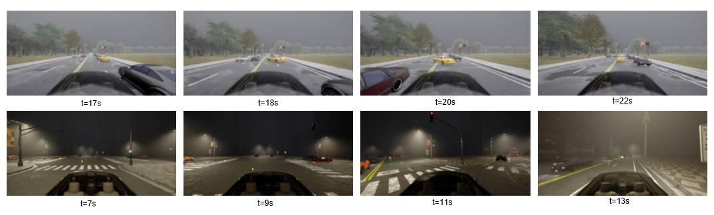
図S10：CARLA シミュレータにおけるクローズドループテスト。2 つのシナリオは、AutoVLA が（上段）割り込み車両に安全に対応し、（下段）滑らかな左折を実行する能力を示している。
図中ラベル：t=17s〜t=22s、t=7s〜t=13s は各フレームのシミュレーション時刻。
自動運転は安全性が極めて重要なシステムであり、VLA モデルに言語による誘導を統合することでその重要性はさらに強調される。この統合には、敵対的攻撃に対する頑健な安全策と、安全でない人間の指示の能動的な特定とフィルタリングが必要となる。潜在的なハッキングの脅威を軽減するためには、車両内に安全な通信チャネルを確立し、それを個々の車両でのオンラインの継続的な強化ファインチューニングではなく、モデル更新の段階的リリース（gated-release）戦略で補完することが不可欠である。